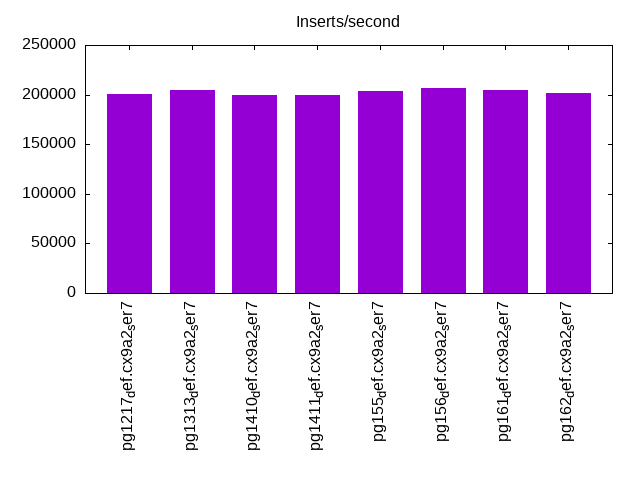
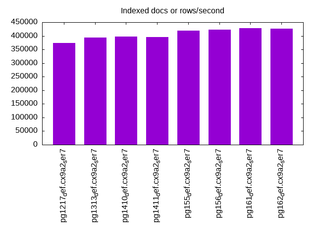
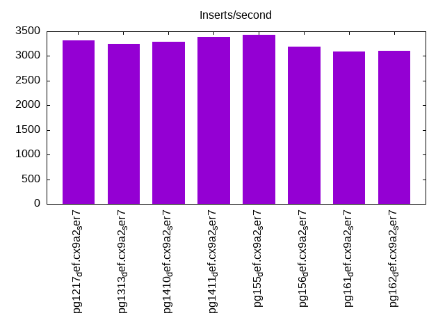
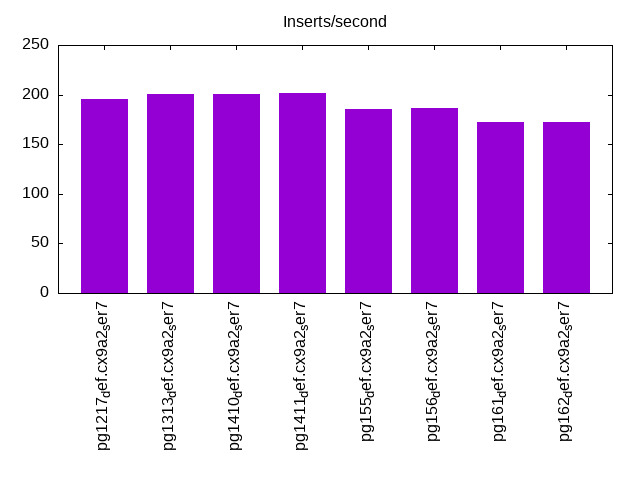
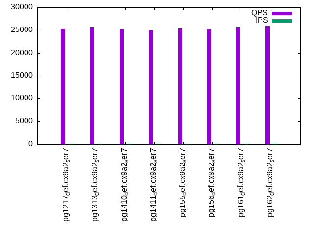
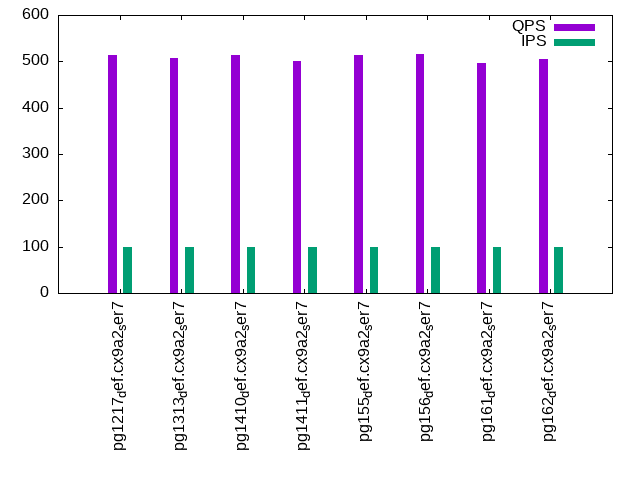
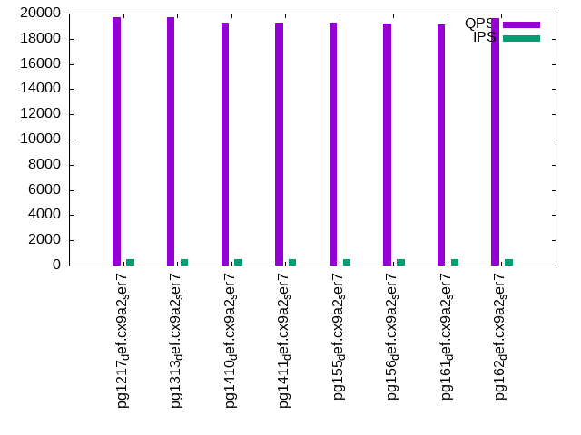
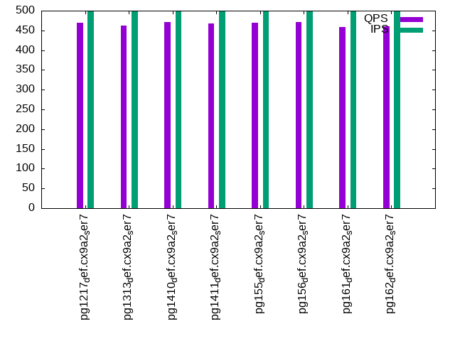
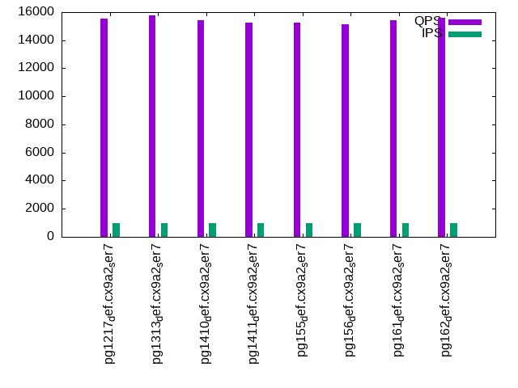
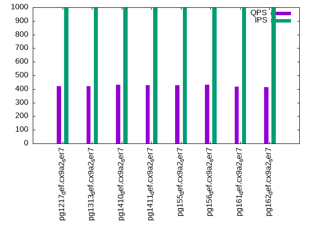

This is a report for the insert benchmark with 800M docs and 1 client(s). It is generated by scripts (bash, awk, sed) and Tufte might not be impressed. An overview of the insert benchmark is here and a short update is here. Below, by DBMS, I mean DBMS+version.config. An example is my8020.c10b40 where my means MySQL, 8020 is version 8.0.20 and c10b40 is the name for the configuration file.
The test server has 8 AMD cores, 32G RAM and an NVMe SSD. It is described here as the SER7. The benchmark was run with 1 client and there were 1 or 3 connections per client (1 for queries or inserts without rate limits, 1+1 for rate limited inserts+deletes). It uses 1 table. It loads 800M rows per table without secondary indexes, creates 3 secondary indexes per table, then inserts 4m+10 rows per table with a delete per insert to avoid growing the table. It then does 6 read+write tests for 7200s each that do queries as fast as possible with 100,100,500,500,1000,1000 inserts/s and the same for deletes/s per client concurrent with the queries. The database is cached in memory. Clients and the DBMS share one server. The per-database configs are in the per-database subdirectories here.
The tested DBMS are:
The numbers are inserts/s for l.i0, l.i1 and l.i2, indexed docs (or rows) /s for l.x and queries/s for qr100, qp100 thru qr1000, qp1000" The values are the average rate over the entire test for inserts (IPS) and queries (QPS). The range of values for IPS and QPS is split into 3 parts: bottom 25%, middle 50%, top 25%. Values in the bottom 25% have a red background, values in the top 25% have a green background and values in the middle have no color. A gray background is used for values that can be ignored because the DBMS did not sustain the target insert rate. Red backgrounds are not used when the minimum value is within 80% of the max value.
| dbms | l.i0 | l.x | l.i1 | l.i2 | qr100 | qp100 | qr500 | qp500 | qr1000 | qp1000 |
|---|---|---|---|---|---|---|---|---|---|---|
| pg1217_def.cx9a2_ser7 | 201056 | 373134 | 3320 | 196 | 25322 | 514 | 19714 | 470 | 15549 | 421 |
| pg1313_def.cx9a2_ser7 | 204186 | 394089 | 3239 | 201 | 25660 | 508 | 19714 | 462 | 15774 | 420 |
| pg1410_def.cx9a2_ser7 | 199700 | 398208 | 3295 | 201 | 25299 | 513 | 19315 | 471 | 15403 | 431 |
| pg1411_def.cx9a2_ser7 | 199651 | 395062 | 3387 | 202 | 25054 | 501 | 19291 | 467 | 15265 | 427 |
| pg155_def.cx9a2_ser7 | 203926 | 418410 | 3425 | 185 | 25477 | 513 | 19283 | 470 | 15262 | 429 |
| pg156_def.cx9a2_ser7 | 206772 | 422610 | 3190 | 186 | 25256 | 515 | 19221 | 471 | 15119 | 430 |
| pg161_def.cx9a2_ser7 | 205128 | 427350 | 3096 | 172 | 25677 | 496 | 19134 | 458 | 15430 | 418 |
| pg162_def.cx9a2_ser7 | 201969 | 426894 | 3098 | 172 | 25878 | 506 | 19660 | 460 | 15618 | 412 |
This table has relative throughput, throughput for the DBMS relative to the DBMS in the first line, using the absolute throughput from the previous table. Values less than 0.95 have a yellow background. Values greater than 1.05 have a blue background.
| dbms | l.i0 | l.x | l.i1 | l.i2 | qr100 | qp100 | qr500 | qp500 | qr1000 | qp1000 |
|---|---|---|---|---|---|---|---|---|---|---|
| pg1217_def.cx9a2_ser7 | 1.00 | 1.00 | 1.00 | 1.00 | 1.00 | 1.00 | 1.00 | 1.00 | 1.00 | 1.00 |
| pg1313_def.cx9a2_ser7 | 1.02 | 1.06 | 0.98 | 1.03 | 1.01 | 0.99 | 1.00 | 0.98 | 1.01 | 1.00 |
| pg1410_def.cx9a2_ser7 | 0.99 | 1.07 | 0.99 | 1.03 | 1.00 | 1.00 | 0.98 | 1.00 | 0.99 | 1.02 |
| pg1411_def.cx9a2_ser7 | 0.99 | 1.06 | 1.02 | 1.03 | 0.99 | 0.97 | 0.98 | 0.99 | 0.98 | 1.01 |
| pg155_def.cx9a2_ser7 | 1.01 | 1.12 | 1.03 | 0.94 | 1.01 | 1.00 | 0.98 | 1.00 | 0.98 | 1.02 |
| pg156_def.cx9a2_ser7 | 1.03 | 1.13 | 0.96 | 0.95 | 1.00 | 1.00 | 0.97 | 1.00 | 0.97 | 1.02 |
| pg161_def.cx9a2_ser7 | 1.02 | 1.15 | 0.93 | 0.88 | 1.01 | 0.96 | 0.97 | 0.97 | 0.99 | 0.99 |
| pg162_def.cx9a2_ser7 | 1.00 | 1.14 | 0.93 | 0.88 | 1.02 | 0.98 | 1.00 | 0.98 | 1.00 | 0.98 |
This lists the average rate of inserts/s for the tests that do inserts concurrent with queries. For such tests the query rate is listed in the table above. The read+write tests are setup so that the insert rate should match the target rate every second. Cells that are not at least 95% of the target have a red background to indicate a failure to satisfy the target.
| dbms | qr100.L1 | qp100.L2 | qr500.L3 | qp500.L4 | qr1000.L5 | qp1000.L6 |
|---|---|---|---|---|---|---|
| pg1217_def.cx9a2_ser7 | 100 | 100 | 499 | 499 | 996 | 999 |
| pg1313_def.cx9a2_ser7 | 100 | 100 | 499 | 499 | 994 | 999 |
| pg1410_def.cx9a2_ser7 | 100 | 100 | 499 | 499 | 999 | 999 |
| pg1411_def.cx9a2_ser7 | 100 | 100 | 499 | 499 | 998 | 998 |
| pg155_def.cx9a2_ser7 | 100 | 100 | 499 | 499 | 999 | 999 |
| pg156_def.cx9a2_ser7 | 100 | 100 | 499 | 499 | 999 | 999 |
| pg161_def.cx9a2_ser7 | 100 | 100 | 499 | 499 | 994 | 999 |
| pg162_def.cx9a2_ser7 | 100 | 100 | 499 | 499 | 998 | 997 |
| target | 100 | 100 | 500 | 500 | 1000 | 1000 |
l.i0: load without secondary indexes. Graphs for performance per 1-second interval are here.
Average throughput:
Insert response time histogram: each cell has the percentage of responses that take <= the time in the header and max is the max response time in seconds. For the max column values in the top 25% of the range have a red background and in the bottom 25% of the range have a green background. The red background is not used when the min value is within 80% of the max value.
| dbms | 256us | 1ms | 4ms | 16ms | 64ms | 256ms | 1s | 4s | 16s | gt | max |
|---|---|---|---|---|---|---|---|---|---|---|---|
| pg1217_def.cx9a2_ser7 | 99.981 | 0.018 | nonzero | nonzero | nonzero | 0.235 | |||||
| pg1313_def.cx9a2_ser7 | 99.949 | 0.045 | 0.004 | 0.002 | nonzero | 0.106 | |||||
| pg1410_def.cx9a2_ser7 | 99.956 | 0.040 | 0.003 | 0.001 | nonzero | 0.100 | |||||
| pg1411_def.cx9a2_ser7 | 99.953 | 0.043 | 0.002 | 0.001 | nonzero | 0.096 | |||||
| pg155_def.cx9a2_ser7 | 99.954 | 0.041 | 0.004 | 0.002 | nonzero | 0.152 | |||||
| pg156_def.cx9a2_ser7 | 99.952 | 0.045 | 0.002 | 0.001 | nonzero | 0.086 | |||||
| pg161_def.cx9a2_ser7 | 99.948 | 0.047 | 0.003 | 0.002 | nonzero | 0.128 | |||||
| pg162_def.cx9a2_ser7 | 99.951 | 0.044 | 0.003 | 0.002 | nonzero | 0.149 |
Performance metrics for the DBMS listed above. Some are normalized by throughput, others are not. Legend for results is here.
ips qps rps rmbps wps wmbps rpq rkbpq wpi wkbpi csps cpups cspq cpupq dbgb1 dbgb2 rss maxop p50 p99 tag 201056 0 38 0.3 348.6 82.3 0.000 0.002 0.002 0.419 23718 11.7 0.118 5 76.5 116.6 0.2 0.235 199820 190487 pg1217_def.cx9a2_ser7 204186 0 39 0.3 288.0 83.9 0.000 0.002 0.001 0.421 24252 11.8 0.119 5 76.5 116.6 18.5 0.106 203475 192886 pg1313_def.cx9a2_ser7 199700 0 36 0.3 283.4 82.0 0.000 0.001 0.001 0.421 23946 11.4 0.120 5 76.5 116.6 18.8 0.100 198073 185392 pg1410_def.cx9a2_ser7 199651 0 37 0.3 284.1 81.8 0.000 0.002 0.001 0.420 23998 11.6 0.120 5 76.5 116.6 3.3 0.096 198298 187884 pg1411_def.cx9a2_ser7 203926 0 39 0.3 287.6 83.9 0.000 0.002 0.001 0.421 24394 11.4 0.120 4 76.5 116.6 3.2 0.152 202849 190199 pg155_def.cx9a2_ser7 206772 0 36 0.3 295.2 84.8 0.000 0.001 0.001 0.420 24719 11.4 0.120 4 76.5 116.6 5.7 0.086 206476 195181 pg156_def.cx9a2_ser7 205128 0 34 0.3 288.8 84.2 0.000 0.001 0.001 0.420 24168 11.5 0.118 4 76.5 116.6 0.4 0.128 203978 193681 pg161_def.cx9a2_ser7 201969 0 34 0.3 286.7 83.0 0.000 0.001 0.001 0.421 24055 11.5 0.119 5 76.5 116.6 18.7 0.149 200580 190595 pg162_def.cx9a2_ser7
l.x: create secondary indexes.
Average throughput:
Performance metrics for the DBMS listed above. Some are normalized by throughput, others are not. Legend for results is here.
ips qps rps rmbps wps wmbps rpq rkbpq wpi wkbpi csps cpups cspq cpupq dbgb1 dbgb2 rss maxop p50 p99 tag 373134 0 1107 126.2 801.9 190.1 0.003 0.346 0.002 0.522 1272 7.1 0.003 2 153.8 193.8 23.2 0.005 NA NA pg1217_def.cx9a2_ser7 394089 0 1123 129.6 385.0 147.3 0.003 0.337 0.001 0.383 1251 7.0 0.003 1 153.6 193.7 21.2 0.007 NA NA pg1313_def.cx9a2_ser7 398208 0 1127 131.0 383.5 147.7 0.003 0.337 0.001 0.380 1245 6.9 0.003 1 153.6 193.7 20.5 0.006 NA NA pg1410_def.cx9a2_ser7 395062 0 1113 129.9 382.8 147.1 0.003 0.337 0.001 0.381 1201 6.8 0.003 1 153.6 193.7 20.7 0.004 NA NA pg1411_def.cx9a2_ser7 418410 0 1495 141.2 411.6 157.9 0.004 0.346 0.001 0.387 1509 6.5 0.004 1 153.6 193.7 22.6 0.003 NA NA pg155_def.cx9a2_ser7 422610 0 1510 142.6 411.9 158.4 0.004 0.345 0.001 0.384 1477 6.4 0.003 1 153.6 193.7 22.9 0.006 NA NA pg156_def.cx9a2_ser7 427350 0 1512 144.1 420.9 160.9 0.004 0.345 0.001 0.386 1548 6.5 0.004 1 153.6 193.7 22.4 0.005 NA NA pg161_def.cx9a2_ser7 426894 0 1506 143.9 418.0 160.3 0.004 0.345 0.001 0.384 1530 6.5 0.004 1 153.6 193.7 23.0 0.005 NA NA pg162_def.cx9a2_ser7
l.i1: continue load after secondary indexes created with 50 inserts per transaction. Graphs for performance per 1-second interval are here.
Average throughput:
Insert response time histogram: each cell has the percentage of responses that take <= the time in the header and max is the max response time in seconds. For the max column values in the top 25% of the range have a red background and in the bottom 25% of the range have a green background. The red background is not used when the min value is within 80% of the max value.
| dbms | 256us | 1ms | 4ms | 16ms | 64ms | 256ms | 1s | 4s | 16s | gt | max |
|---|---|---|---|---|---|---|---|---|---|---|---|
| pg1217_def.cx9a2_ser7 | 97.308 | 2.684 | 0.009 | 0.118 | |||||||
| pg1313_def.cx9a2_ser7 | 88.331 | 11.539 | 0.130 | 0.139 | |||||||
| pg1410_def.cx9a2_ser7 | 91.196 | 8.775 | 0.029 | 0.116 | |||||||
| pg1411_def.cx9a2_ser7 | 94.911 | 5.060 | 0.029 | 0.249 | |||||||
| pg155_def.cx9a2_ser7 | 97.414 | 2.579 | 0.007 | 0.177 | |||||||
| pg156_def.cx9a2_ser7 | 94.328 | 5.647 | 0.025 | 0.232 | |||||||
| pg161_def.cx9a2_ser7 | 94.647 | 5.334 | 0.019 | 0.157 | |||||||
| pg162_def.cx9a2_ser7 | 94.138 | 5.849 | 0.014 | 0.160 |
Delete response time histogram: each cell has the percentage of responses that take <= the time in the header and max is the max response time in seconds. For the max column values in the top 25% of the range have a red background and in the bottom 25% of the range have a green background. The red background is not used when the min value is within 80% of the max value.
| dbms | 256us | 1ms | 4ms | 16ms | 64ms | 256ms | 1s | 4s | 16s | gt | max |
|---|---|---|---|---|---|---|---|---|---|---|---|
| pg1217_def.cx9a2_ser7 | 0.004 | 1.620 | 11.223 | 56.785 | 30.366 | 0.003 | 0.101 | ||||
| pg1313_def.cx9a2_ser7 | 0.003 | 1.149 | 10.466 | 58.605 | 29.777 | 0.027 | |||||
| pg1410_def.cx9a2_ser7 | 0.004 | 1.188 | 10.350 | 59.231 | 29.227 | 0.030 | |||||
| pg1411_def.cx9a2_ser7 | 0.004 | 1.468 | 10.254 | 57.635 | 30.640 | 0.029 | |||||
| pg155_def.cx9a2_ser7 | 0.004 | 1.411 | 9.738 | 55.456 | 33.391 | 0.027 | |||||
| pg156_def.cx9a2_ser7 | 0.005 | 1.661 | 11.685 | 52.179 | 34.469 | 0.001 | 0.089 | ||||
| pg161_def.cx9a2_ser7 | 0.004 | 1.770 | 9.793 | 50.836 | 37.598 | 0.034 | |||||
| pg162_def.cx9a2_ser7 | 0.005 | 1.480 | 11.389 | 50.578 | 36.549 | 0.031 |
Performance metrics for the DBMS listed above. Some are normalized by throughput, others are not. Legend for results is here.
ips qps rps rmbps wps wmbps rpq rkbpq wpi wkbpi csps cpups cspq cpupq dbgb1 dbgb2 rss maxop p50 p99 tag 3320 0 4229 33.5 3629.8 70.1 1.274 10.329 1.093 21.622 11788 7.7 3.551 186 154.4 194.5 19.7 0.118 3399 2097 pg1217_def.cx9a2_ser7 3239 0 4668 37.2 3617.8 65.5 1.441 11.767 1.117 20.698 12034 7.4 3.716 183 154.3 194.3 20.7 0.139 3296 950 pg1313_def.cx9a2_ser7 3295 0 4746 37.9 3708.6 67.2 1.441 11.769 1.126 20.893 12132 7.3 3.682 177 154.3 194.3 15.6 0.116 3346 1498 pg1410_def.cx9a2_ser7 3387 0 4872 38.8 3800.5 69.2 1.439 11.736 1.122 20.917 12476 7.6 3.684 180 154.3 194.3 20.6 0.249 3246 1149 pg1411_def.cx9a2_ser7 3425 0 4926 39.3 3791.0 68.8 1.438 11.736 1.107 20.567 12502 8.0 3.651 187 154.3 194.3 20.5 0.177 3195 2047 pg155_def.cx9a2_ser7 3190 0 4594 36.6 3603.8 65.3 1.440 11.750 1.130 20.978 11639 7.4 3.649 186 154.3 194.3 20.0 0.232 3196 1798 pg156_def.cx9a2_ser7 3096 0 4470 35.6 3471.6 62.8 1.444 11.774 1.121 20.774 11367 7.4 3.672 191 154.3 194.3 20.0 0.157 3047 1498 pg161_def.cx9a2_ser7 3098 0 4477 35.6 3469.3 62.8 1.445 11.782 1.120 20.762 11360 7.5 3.666 194 154.3 194.3 20.3 0.160 3096 1548 pg162_def.cx9a2_ser7
l.i2: continue load after secondary indexes created with 5 inserts per transaction. Graphs for performance per 1-second interval are here.
Average throughput:
Insert response time histogram: each cell has the percentage of responses that take <= the time in the header and max is the max response time in seconds. For the max column values in the top 25% of the range have a red background and in the bottom 25% of the range have a green background. The red background is not used when the min value is within 80% of the max value.
| dbms | 256us | 1ms | 4ms | 16ms | 64ms | 256ms | 1s | 4s | 16s | gt | max |
|---|---|---|---|---|---|---|---|---|---|---|---|
| pg1217_def.cx9a2_ser7 | 2.015 | 96.596 | 1.378 | 0.009 | 0.002 | 0.118 | |||||
| pg1313_def.cx9a2_ser7 | 1.750 | 96.067 | 2.169 | 0.012 | 0.001 | 0.097 | |||||
| pg1410_def.cx9a2_ser7 | 1.747 | 96.003 | 2.240 | 0.009 | 0.001 | 0.080 | |||||
| pg1411_def.cx9a2_ser7 | 3.728 | 94.398 | 1.851 | 0.022 | 0.001 | 0.070 | |||||
| pg155_def.cx9a2_ser7 | 1.307 | 96.383 | 2.300 | 0.010 | 0.001 | 0.088 | |||||
| pg156_def.cx9a2_ser7 | 1.158 | 96.403 | 2.429 | 0.009 | 0.002 | 0.124 | |||||
| pg161_def.cx9a2_ser7 | 1.056 | 95.948 | 2.985 | 0.009 | 0.002 | 0.113 | |||||
| pg162_def.cx9a2_ser7 | 0.927 | 95.872 | 3.187 | 0.012 | 0.002 | 0.106 |
Delete response time histogram: each cell has the percentage of responses that take <= the time in the header and max is the max response time in seconds. For the max column values in the top 25% of the range have a red background and in the bottom 25% of the range have a green background. The red background is not used when the min value is within 80% of the max value.
| dbms | 256us | 1ms | 4ms | 16ms | 64ms | 256ms | 1s | 4s | 16s | gt | max |
|---|---|---|---|---|---|---|---|---|---|---|---|
| pg1217_def.cx9a2_ser7 | 99.999 | 0.001 | 0.088 | ||||||||
| pg1313_def.cx9a2_ser7 | 99.999 | 0.001 | 0.092 | ||||||||
| pg1410_def.cx9a2_ser7 | 99.999 | 0.001 | 0.090 | ||||||||
| pg1411_def.cx9a2_ser7 | 99.999 | 0.001 | 0.090 | ||||||||
| pg155_def.cx9a2_ser7 | 99.999 | 0.001 | 0.091 | ||||||||
| pg156_def.cx9a2_ser7 | 99.999 | 0.001 | 0.091 | ||||||||
| pg161_def.cx9a2_ser7 | 99.999 | 0.001 | 0.114 | ||||||||
| pg162_def.cx9a2_ser7 | 99.999 | 0.001 | 0.090 |
Performance metrics for the DBMS listed above. Some are normalized by throughput, others are not. Legend for results is here.
ips qps rps rmbps wps wmbps rpq rkbpq wpi wkbpi csps cpups cspq cpupq dbgb1 dbgb2 rss maxop p50 p99 tag 196 0 211 1.7 453.4 6.5 1.075 8.744 2.310 34.144 1817 6.3 9.254 2568 154.6 193.2 19.7 0.118 195 175 pg1217_def.cx9a2_ser7 201 0 215 1.7 553.7 7.9 1.073 8.750 2.759 40.300 1943 6.5 9.679 2591 154.4 194.5 22.2 0.097 200 180 pg1313_def.cx9a2_ser7 201 0 216 1.7 557.7 7.8 1.073 8.746 2.769 39.494 1745 6.1 8.663 2423 154.4 194.5 22.2 0.080 200 180 pg1410_def.cx9a2_ser7 202 0 216 1.7 555.9 7.8 1.072 8.731 2.758 39.368 1741 6.0 8.635 2381 154.4 194.5 14.6 0.070 200 180 pg1411_def.cx9a2_ser7 185 0 199 1.6 515.8 7.4 1.073 8.756 2.787 41.017 1585 6.0 8.565 2593 154.4 194.5 22.3 0.088 185 165 pg155_def.cx9a2_ser7 186 0 200 1.6 517.4 7.3 1.073 8.742 2.776 40.274 1583 5.9 8.493 2532 154.4 194.5 14.5 0.124 185 165 pg156_def.cx9a2_ser7 172 0 185 1.5 484.7 6.9 1.072 8.755 2.813 41.230 1494 5.9 8.670 2739 154.4 194.5 22.0 0.113 170 155 pg161_def.cx9a2_ser7 172 0 184 1.5 483.4 6.9 1.073 8.757 2.816 41.212 1487 5.9 8.661 2749 154.4 194.5 21.9 0.106 170 155 pg162_def.cx9a2_ser7
qr100.L1: range queries with 100 insert/s per client. Graphs for performance per 1-second interval are here.
Average throughput:
Query response time histogram: each cell has the percentage of responses that take <= the time in the header and max is the max response time in seconds. For max values in the top 25% of the range have a red background and in the bottom 25% of the range have a green background. The red background is not used when the min value is within 80% of the max value.
| dbms | 256us | 1ms | 4ms | 16ms | 64ms | 256ms | 1s | 4s | 16s | gt | max |
|---|---|---|---|---|---|---|---|---|---|---|---|
| pg1217_def.cx9a2_ser7 | 99.993 | 0.007 | nonzero | nonzero | 0.011 | ||||||
| pg1313_def.cx9a2_ser7 | 99.992 | 0.007 | nonzero | nonzero | 0.014 | ||||||
| pg1410_def.cx9a2_ser7 | 99.992 | 0.008 | nonzero | nonzero | 0.011 | ||||||
| pg1411_def.cx9a2_ser7 | 99.991 | 0.008 | nonzero | nonzero | 0.013 | ||||||
| pg155_def.cx9a2_ser7 | 99.993 | 0.007 | nonzero | nonzero | 0.010 | ||||||
| pg156_def.cx9a2_ser7 | 99.992 | 0.008 | nonzero | nonzero | 0.012 | ||||||
| pg161_def.cx9a2_ser7 | 99.993 | 0.007 | nonzero | nonzero | 0.010 | ||||||
| pg162_def.cx9a2_ser7 | 99.993 | 0.007 | nonzero | nonzero | 0.010 |
Insert response time histogram: each cell has the percentage of responses that take <= the time in the header and max is the max response time in seconds. For max values in the top 25% of the range have a red background and in the bottom 25% of the range have a green background. The red background is not used when the min value is within 80% of the max value.
| dbms | 256us | 1ms | 4ms | 16ms | 64ms | 256ms | 1s | 4s | 16s | gt | max |
|---|---|---|---|---|---|---|---|---|---|---|---|
| pg1217_def.cx9a2_ser7 | 74.201 | 25.799 | 0.024 | ||||||||
| pg1313_def.cx9a2_ser7 | 73.132 | 26.715 | 0.153 | 0.098 | |||||||
| pg1410_def.cx9a2_ser7 | 74.840 | 25.160 | 0.027 | ||||||||
| pg1411_def.cx9a2_ser7 | 71.326 | 28.396 | 0.278 | 0.099 | |||||||
| pg155_def.cx9a2_ser7 | 74.493 | 25.507 | 0.025 | ||||||||
| pg156_def.cx9a2_ser7 | 74.236 | 25.764 | 0.028 | ||||||||
| pg161_def.cx9a2_ser7 | 73.285 | 26.681 | 0.035 | 0.079 | |||||||
| pg162_def.cx9a2_ser7 | 74.611 | 25.389 | 0.025 |
Delete response time histogram: each cell has the percentage of responses that take <= the time in the header and max is the max response time in seconds. For max values in the top 25% of the range have a red background and in the bottom 25% of the range have a green background. The red background is not used when the min value is within 80% of the max value.
| dbms | 256us | 1ms | 4ms | 16ms | 64ms | 256ms | 1s | 4s | 16s | gt | max |
|---|---|---|---|---|---|---|---|---|---|---|---|
| pg1217_def.cx9a2_ser7 | 0.139 | 10.938 | 57.528 | 31.396 | 0.010 | ||||||
| pg1313_def.cx9a2_ser7 | 0.007 | 10.917 | 56.542 | 32.535 | 0.015 | ||||||
| pg1410_def.cx9a2_ser7 | 0.007 | 13.257 | 52.611 | 34.125 | 0.010 | ||||||
| pg1411_def.cx9a2_ser7 | 0.069 | 12.167 | 53.264 | 34.486 | 0.014 | 0.025 | |||||
| pg155_def.cx9a2_ser7 | 0.049 | 12.208 | 53.993 | 33.750 | 0.015 | ||||||
| pg156_def.cx9a2_ser7 | 0.062 | 11.792 | 56.347 | 31.799 | 0.015 | ||||||
| pg161_def.cx9a2_ser7 | 0.007 | 12.118 | 55.785 | 32.090 | 0.016 | ||||||
| pg162_def.cx9a2_ser7 | 0.021 | 12.111 | 54.639 | 33.229 | 0.010 |
Performance metrics for the DBMS listed above. Some are normalized by throughput, others are not. Legend for results is here.
ips qps rps rmbps wps wmbps rpq rkbpq wpi wkbpi csps cpups cspq cpupq dbgb1 dbgb2 rss maxop p50 p99 tag 100 25322 110 0.9 146.3 2.6 0.004 0.036 1.466 26.751 97275 4.8 3.841 15 154.7 187.2 23.1 0.011 25731 19668 pg1217_def.cx9a2_ser7 100 25660 109 0.9 146.2 2.6 0.004 0.035 1.465 26.789 98571 4.9 3.841 15 154.5 187.9 23.1 0.014 26261 19690 pg1313_def.cx9a2_ser7 100 25299 109 0.9 147.1 2.6 0.004 0.036 1.474 26.866 97087 4.7 3.838 15 154.5 187.6 22.7 0.011 25636 19420 pg1410_def.cx9a2_ser7 100 25054 109 0.9 147.8 2.6 0.004 0.036 1.481 26.923 96181 4.7 3.839 15 154.5 187.5 22.6 0.013 25484 19051 pg1411_def.cx9a2_ser7 100 25477 109 0.9 147.0 2.6 0.004 0.035 1.473 26.847 97745 4.6 3.837 14 154.5 188.0 23.1 0.010 25907 19179 pg155_def.cx9a2_ser7 100 25256 109 0.9 147.1 2.6 0.004 0.035 1.474 26.846 96905 4.7 3.837 15 154.5 187.7 23.1 0.012 25687 19468 pg156_def.cx9a2_ser7 100 25677 109 0.9 147.1 2.6 0.004 0.035 1.474 26.870 98492 4.7 3.836 15 154.5 187.9 23.0 0.010 25971 19802 pg161_def.cx9a2_ser7 100 25878 109 0.9 146.9 2.6 0.004 0.035 1.472 26.853 99274 4.7 3.836 15 154.5 187.9 23.0 0.010 26081 19943 pg162_def.cx9a2_ser7
qp100.L2: point queries with 100 insert/s per client. Graphs for performance per 1-second interval are here.
Average throughput:
Query response time histogram: each cell has the percentage of responses that take <= the time in the header and max is the max response time in seconds. For max values in the top 25% of the range have a red background and in the bottom 25% of the range have a green background. The red background is not used when the min value is within 80% of the max value.
| dbms | 256us | 1ms | 4ms | 16ms | 64ms | 256ms | 1s | 4s | 16s | gt | max |
|---|---|---|---|---|---|---|---|---|---|---|---|
| pg1217_def.cx9a2_ser7 | nonzero | 0.496 | 99.457 | 0.047 | nonzero | 0.025 | |||||
| pg1313_def.cx9a2_ser7 | 0.493 | 99.064 | 0.437 | 0.005 | 0.043 | ||||||
| pg1410_def.cx9a2_ser7 | nonzero | 0.495 | 99.451 | 0.054 | nonzero | 0.027 | |||||
| pg1411_def.cx9a2_ser7 | nonzero | 0.483 | 98.638 | 0.848 | 0.030 | nonzero | 0.095 | ||||
| pg155_def.cx9a2_ser7 | nonzero | 0.473 | 99.477 | 0.050 | nonzero | nonzero | 0.070 | ||||
| pg156_def.cx9a2_ser7 | nonzero | 0.493 | 99.465 | 0.042 | nonzero | 0.087 | |||||
| pg161_def.cx9a2_ser7 | nonzero | 0.429 | 99.007 | 0.536 | 0.028 | nonzero | 0.078 | ||||
| pg162_def.cx9a2_ser7 | nonzero | 0.443 | 99.515 | 0.043 | nonzero | 0.017 |
Insert response time histogram: each cell has the percentage of responses that take <= the time in the header and max is the max response time in seconds. For max values in the top 25% of the range have a red background and in the bottom 25% of the range have a green background. The red background is not used when the min value is within 80% of the max value.
| dbms | 256us | 1ms | 4ms | 16ms | 64ms | 256ms | 1s | 4s | 16s | gt | max |
|---|---|---|---|---|---|---|---|---|---|---|---|
| pg1217_def.cx9a2_ser7 | 81.667 | 18.333 | 0.038 | ||||||||
| pg1313_def.cx9a2_ser7 | 80.458 | 19.521 | 0.021 | 0.094 | |||||||
| pg1410_def.cx9a2_ser7 | 79.583 | 20.417 | 0.036 | ||||||||
| pg1411_def.cx9a2_ser7 | 92.736 | 6.799 | 0.465 | 0.182 | |||||||
| pg155_def.cx9a2_ser7 | 83.590 | 16.410 | 0.032 | ||||||||
| pg156_def.cx9a2_ser7 | 83.069 | 16.931 | 0.035 | ||||||||
| pg161_def.cx9a2_ser7 | 79.278 | 20.319 | 0.403 | 0.122 | |||||||
| pg162_def.cx9a2_ser7 | 78.500 | 21.500 | 0.040 |
Delete response time histogram: each cell has the percentage of responses that take <= the time in the header and max is the max response time in seconds. For max values in the top 25% of the range have a red background and in the bottom 25% of the range have a green background. The red background is not used when the min value is within 80% of the max value.
| dbms | 256us | 1ms | 4ms | 16ms | 64ms | 256ms | 1s | 4s | 16s | gt | max |
|---|---|---|---|---|---|---|---|---|---|---|---|
| pg1217_def.cx9a2_ser7 | 0.028 | 11.535 | 54.806 | 33.632 | 0.012 | ||||||
| pg1313_def.cx9a2_ser7 | 0.007 | 12.160 | 55.174 | 32.660 | 0.013 | ||||||
| pg1410_def.cx9a2_ser7 | 0.056 | 11.868 | 54.479 | 33.597 | 0.012 | ||||||
| pg1411_def.cx9a2_ser7 | 0.007 | 12.181 | 51.896 | 35.917 | 0.014 | ||||||
| pg155_def.cx9a2_ser7 | 0.035 | 11.132 | 55.951 | 32.882 | 0.012 | ||||||
| pg156_def.cx9a2_ser7 | 0.049 | 11.257 | 54.806 | 33.889 | 0.011 | ||||||
| pg161_def.cx9a2_ser7 | 0.028 | 11.785 | 55.889 | 32.299 | 0.012 | ||||||
| pg162_def.cx9a2_ser7 | 0.007 | 11.799 | 55.674 | 32.521 | 0.009 |
Performance metrics for the DBMS listed above. Some are normalized by throughput, others are not. Legend for results is here.
ips qps rps rmbps wps wmbps rpq rkbpq wpi wkbpi csps cpups cspq cpupq dbgb1 dbgb2 rss maxop p50 p99 tag 100 514 6497 50.9 208.7 3.0 12.642 101.452 2.091 30.951 15641 2.2 30.437 342 154.7 176.2 22.5 0.025 512 368 pg1217_def.cx9a2_ser7 100 508 6432 50.4 208.5 3.0 12.651 101.514 2.089 30.932 15441 2.1 30.372 330 154.5 177.0 21.9 0.043 512 272 pg1313_def.cx9a2_ser7 100 513 6487 50.8 208.6 3.0 12.641 101.441 2.090 30.949 15552 2.0 30.303 312 154.5 176.9 21.8 0.027 512 368 pg1410_def.cx9a2_ser7 100 501 6341 49.7 208.4 3.0 12.657 101.566 2.089 30.941 15232 2.0 30.403 319 154.5 176.8 21.8 0.095 512 176 pg1411_def.cx9a2_ser7 100 513 6488 50.8 208.6 3.0 12.643 101.454 2.091 30.951 15458 2.1 30.121 327 154.5 177.1 22.0 0.070 512 368 pg155_def.cx9a2_ser7 100 515 6510 51.0 208.7 3.0 12.643 101.453 2.092 30.954 15510 2.0 30.123 311 154.5 176.9 22.0 0.087 527 368 pg156_def.cx9a2_ser7 100 496 6283 49.2 208.4 3.0 12.668 101.673 2.088 30.931 15256 2.1 30.757 339 154.5 177.0 21.7 0.078 511 192 pg161_def.cx9a2_ser7 100 506 6403 50.2 208.4 3.0 12.652 101.537 2.088 30.931 15539 2.1 30.704 332 154.5 177.0 21.8 0.017 511 368 pg162_def.cx9a2_ser7
qr500.L3: range queries with 500 insert/s per client. Graphs for performance per 1-second interval are here.
Average throughput:
Query response time histogram: each cell has the percentage of responses that take <= the time in the header and max is the max response time in seconds. For max values in the top 25% of the range have a red background and in the bottom 25% of the range have a green background. The red background is not used when the min value is within 80% of the max value.
| dbms | 256us | 1ms | 4ms | 16ms | 64ms | 256ms | 1s | 4s | 16s | gt | max |
|---|---|---|---|---|---|---|---|---|---|---|---|
| pg1217_def.cx9a2_ser7 | 99.965 | 0.035 | nonzero | nonzero | 0.013 | ||||||
| pg1313_def.cx9a2_ser7 | 99.964 | 0.036 | nonzero | nonzero | nonzero | 0.018 | |||||
| pg1410_def.cx9a2_ser7 | 99.965 | 0.035 | nonzero | nonzero | 0.012 | ||||||
| pg1411_def.cx9a2_ser7 | 99.968 | 0.031 | nonzero | nonzero | nonzero | 0.039 | |||||
| pg155_def.cx9a2_ser7 | 99.962 | 0.037 | nonzero | nonzero | nonzero | 0.034 | |||||
| pg156_def.cx9a2_ser7 | 99.966 | 0.034 | nonzero | nonzero | nonzero | 0.021 | |||||
| pg161_def.cx9a2_ser7 | 99.965 | 0.035 | nonzero | nonzero | 0.014 | ||||||
| pg162_def.cx9a2_ser7 | 99.967 | 0.033 | nonzero | nonzero | 0.012 |
Insert response time histogram: each cell has the percentage of responses that take <= the time in the header and max is the max response time in seconds. For max values in the top 25% of the range have a red background and in the bottom 25% of the range have a green background. The red background is not used when the min value is within 80% of the max value.
| dbms | 256us | 1ms | 4ms | 16ms | 64ms | 256ms | 1s | 4s | 16s | gt | max |
|---|---|---|---|---|---|---|---|---|---|---|---|
| pg1217_def.cx9a2_ser7 | 91.094 | 8.904 | 0.001 | 0.079 | |||||||
| pg1313_def.cx9a2_ser7 | 88.074 | 10.938 | 0.989 | 0.184 | |||||||
| pg1410_def.cx9a2_ser7 | 92.369 | 7.628 | 0.003 | 0.069 | |||||||
| pg1411_def.cx9a2_ser7 | 93.207 | 5.085 | 1.708 | 0.171 | |||||||
| pg155_def.cx9a2_ser7 | 90.207 | 9.792 | 0.001 | 0.082 | |||||||
| pg156_def.cx9a2_ser7 | 91.561 | 8.436 | 0.003 | 0.081 | |||||||
| pg161_def.cx9a2_ser7 | 83.172 | 13.917 | 2.911 | 0.168 | |||||||
| pg162_def.cx9a2_ser7 | 91.507 | 8.493 | 0.063 |
Delete response time histogram: each cell has the percentage of responses that take <= the time in the header and max is the max response time in seconds. For max values in the top 25% of the range have a red background and in the bottom 25% of the range have a green background. The red background is not used when the min value is within 80% of the max value.
| dbms | 256us | 1ms | 4ms | 16ms | 64ms | 256ms | 1s | 4s | 16s | gt | max |
|---|---|---|---|---|---|---|---|---|---|---|---|
| pg1217_def.cx9a2_ser7 | 0.031 | 3.424 | 12.271 | 57.139 | 27.136 | 0.028 | |||||
| pg1313_def.cx9a2_ser7 | 0.147 | 3.056 | 13.356 | 56.701 | 26.740 | 0.036 | |||||
| pg1410_def.cx9a2_ser7 | 0.129 | 3.083 | 12.726 | 56.635 | 27.426 | 0.034 | |||||
| pg1411_def.cx9a2_ser7 | 0.035 | 3.300 | 12.771 | 56.290 | 27.604 | 0.038 | |||||
| pg155_def.cx9a2_ser7 | 0.067 | 2.800 | 13.436 | 53.561 | 30.136 | 0.057 | |||||
| pg156_def.cx9a2_ser7 | 0.099 | 3.194 | 12.193 | 55.412 | 29.101 | 0.054 | |||||
| pg161_def.cx9a2_ser7 | 0.106 | 2.633 | 13.364 | 50.793 | 33.100 | 0.004 | 0.115 | ||||
| pg162_def.cx9a2_ser7 | 0.067 | 3.206 | 13.171 | 51.567 | 31.990 | 0.030 |
Performance metrics for the DBMS listed above. Some are normalized by throughput, others are not. Legend for results is here.
ips qps rps rmbps wps wmbps rpq rkbpq wpi wkbpi csps cpups cspq cpupq dbgb1 dbgb2 rss maxop p50 p99 tag 499 19714 649 5.2 602.3 11.8 0.033 0.272 1.206 24.240 77454 6.2 3.929 25 154.8 176.4 20.1 0.013 18676 12787 pg1217_def.cx9a2_ser7 499 19714 648 5.2 601.6 11.7 0.033 0.272 1.205 24.052 77437 6.3 3.928 26 154.6 176.3 20.0 0.018 18667 12815 pg1313_def.cx9a2_ser7 499 19315 648 5.2 602.8 11.8 0.034 0.277 1.207 24.149 75827 6.0 3.926 25 154.6 176.3 19.5 0.012 18584 12915 pg1410_def.cx9a2_ser7 499 19291 648 5.2 612.0 11.9 0.034 0.278 1.226 24.485 75753 6.0 3.927 25 154.6 176.3 19.9 0.039 18713 12849 pg1411_def.cx9a2_ser7 499 19283 648 5.2 602.4 11.8 0.034 0.278 1.206 24.099 75708 6.0 3.926 25 154.6 176.3 19.7 0.034 18380 12691 pg155_def.cx9a2_ser7 499 19221 648 5.2 601.6 11.8 0.034 0.279 1.205 24.105 75450 6.1 3.925 25 154.6 176.3 20.1 0.021 18328 12660 pg156_def.cx9a2_ser7 499 19134 648 5.2 602.3 11.8 0.034 0.281 1.206 24.108 75139 6.1 3.927 26 154.6 176.3 19.2 0.014 18553 12777 pg161_def.cx9a2_ser7 499 19660 648 5.2 601.8 11.7 0.033 0.273 1.205 24.081 77125 6.1 3.923 25 154.6 176.3 19.1 0.012 18891 12898 pg162_def.cx9a2_ser7
qp500.L4: point queries with 500 insert/s per client. Graphs for performance per 1-second interval are here.
Average throughput:
Query response time histogram: each cell has the percentage of responses that take <= the time in the header and max is the max response time in seconds. For max values in the top 25% of the range have a red background and in the bottom 25% of the range have a green background. The red background is not used when the min value is within 80% of the max value.
| dbms | 256us | 1ms | 4ms | 16ms | 64ms | 256ms | 1s | 4s | 16s | gt | max |
|---|---|---|---|---|---|---|---|---|---|---|---|
| pg1217_def.cx9a2_ser7 | 0.181 | 99.119 | 0.698 | 0.002 | 0.036 | ||||||
| pg1313_def.cx9a2_ser7 | 0.174 | 98.640 | 1.159 | 0.028 | nonzero | nonzero | 0.880 | ||||
| pg1410_def.cx9a2_ser7 | 0.183 | 99.140 | 0.676 | 0.002 | 0.039 | ||||||
| pg1411_def.cx9a2_ser7 | 0.182 | 99.014 | 0.767 | 0.037 | nonzero | nonzero | 0.411 | ||||
| pg155_def.cx9a2_ser7 | 0.169 | 99.154 | 0.675 | 0.002 | 0.037 | ||||||
| pg156_def.cx9a2_ser7 | 0.180 | 99.110 | 0.708 | 0.002 | 0.041 | ||||||
| pg161_def.cx9a2_ser7 | 0.152 | 98.859 | 0.967 | 0.022 | 0.045 | ||||||
| pg162_def.cx9a2_ser7 | 0.157 | 98.882 | 0.936 | 0.024 | nonzero | 0.078 |
Insert response time histogram: each cell has the percentage of responses that take <= the time in the header and max is the max response time in seconds. For max values in the top 25% of the range have a red background and in the bottom 25% of the range have a green background. The red background is not used when the min value is within 80% of the max value.
| dbms | 256us | 1ms | 4ms | 16ms | 64ms | 256ms | 1s | 4s | 16s | gt | max |
|---|---|---|---|---|---|---|---|---|---|---|---|
| pg1217_def.cx9a2_ser7 | 84.933 | 15.067 | 0.064 | ||||||||
| pg1313_def.cx9a2_ser7 | 82.450 | 17.304 | 0.246 | 0.193 | |||||||
| pg1410_def.cx9a2_ser7 | 86.792 | 13.208 | 0.059 | ||||||||
| pg1411_def.cx9a2_ser7 | 91.518 | 8.178 | 0.303 | 0.001 | 0.283 | ||||||
| pg155_def.cx9a2_ser7 | 85.017 | 14.982 | 0.001 | 0.073 | |||||||
| pg156_def.cx9a2_ser7 | 83.862 | 16.137 | 0.055 | ||||||||
| pg161_def.cx9a2_ser7 | 83.408 | 16.403 | 0.189 | 0.115 | |||||||
| pg162_def.cx9a2_ser7 | 84.247 | 15.528 | 0.225 | 0.113 |
Delete response time histogram: each cell has the percentage of responses that take <= the time in the header and max is the max response time in seconds. For max values in the top 25% of the range have a red background and in the bottom 25% of the range have a green background. The red background is not used when the min value is within 80% of the max value.
| dbms | 256us | 1ms | 4ms | 16ms | 64ms | 256ms | 1s | 4s | 16s | gt | max |
|---|---|---|---|---|---|---|---|---|---|---|---|
| pg1217_def.cx9a2_ser7 | 0.007 | 3.314 | 13.831 | 57.532 | 25.317 | 0.028 | |||||
| pg1313_def.cx9a2_ser7 | 0.029 | 3.299 | 13.779 | 58.150 | 24.743 | 0.033 | |||||
| pg1410_def.cx9a2_ser7 | 0.124 | 3.374 | 13.510 | 57.251 | 25.742 | 0.039 | |||||
| pg1411_def.cx9a2_ser7 | 0.071 | 2.842 | 14.081 | 57.094 | 25.912 | 0.031 | |||||
| pg155_def.cx9a2_ser7 | 0.065 | 3.506 | 14.312 | 53.742 | 28.375 | 0.029 | |||||
| pg156_def.cx9a2_ser7 | 0.132 | 3.658 | 13.981 | 54.485 | 27.744 | 0.030 | |||||
| pg161_def.cx9a2_ser7 | 0.036 | 2.842 | 14.681 | 51.083 | 31.358 | 0.029 | |||||
| pg162_def.cx9a2_ser7 | 0.237 | 2.874 | 14.793 | 51.103 | 30.993 | 0.030 |
Performance metrics for the DBMS listed above. Some are normalized by throughput, others are not. Legend for results is here.
ips qps rps rmbps wps wmbps rpq rkbpq wpi wkbpi csps cpups cspq cpupq dbgb1 dbgb2 rss maxop p50 p99 tag 499 470 7020 55.0 994.1 14.1 14.921 119.751 1.991 29.010 17083 3.2 36.309 544 155.0 185.0 22.1 0.036 479 368 pg1217_def.cx9a2_ser7 499 462 6923 54.3 993.5 14.1 14.968 120.125 1.989 28.973 16836 3.1 36.402 536 154.8 184.8 22.1 0.880 479 176 pg1313_def.cx9a2_ser7 499 471 7027 55.1 994.5 14.2 14.913 119.684 1.991 29.032 17001 3.1 36.080 526 154.8 185.2 22.2 0.039 479 368 pg1410_def.cx9a2_ser7 499 467 6975 54.7 992.2 14.2 14.939 119.900 1.987 29.016 16915 3.1 36.228 531 154.8 186.3 22.8 0.411 479 160 pg1411_def.cx9a2_ser7 499 470 7014 55.0 994.3 14.2 14.921 119.746 1.991 29.027 16908 3.1 35.968 528 154.8 185.1 22.2 0.037 479 368 pg155_def.cx9a2_ser7 499 471 7030 55.1 994.8 14.2 14.914 119.701 1.992 29.031 16948 3.1 35.952 526 154.8 185.0 22.1 0.041 479 368 pg156_def.cx9a2_ser7 499 458 6869 53.8 992.8 14.1 14.994 120.349 1.988 28.990 16837 3.2 36.754 559 154.8 185.1 21.8 0.045 463 176 pg161_def.cx9a2_ser7 499 460 6890 54.0 992.9 14.1 14.984 120.270 1.988 29.004 16868 3.2 36.686 557 154.8 185.0 21.8 0.078 463 192 pg162_def.cx9a2_ser7
qr1000.L5: range queries with 1000 insert/s per client. Graphs for performance per 1-second interval are here.
Average throughput:
Query response time histogram: each cell has the percentage of responses that take <= the time in the header and max is the max response time in seconds. For max values in the top 25% of the range have a red background and in the bottom 25% of the range have a green background. The red background is not used when the min value is within 80% of the max value.
| dbms | 256us | 1ms | 4ms | 16ms | 64ms | 256ms | 1s | 4s | 16s | gt | max |
|---|---|---|---|---|---|---|---|---|---|---|---|
| pg1217_def.cx9a2_ser7 | 99.920 | 0.079 | nonzero | 0.001 | nonzero | 0.016 | |||||
| pg1313_def.cx9a2_ser7 | 99.920 | 0.079 | nonzero | 0.001 | nonzero | 0.023 | |||||
| pg1410_def.cx9a2_ser7 | 99.925 | 0.074 | nonzero | 0.001 | nonzero | 0.091 | |||||
| pg1411_def.cx9a2_ser7 | 99.925 | 0.074 | 0.001 | 0.001 | 0.016 | ||||||
| pg155_def.cx9a2_ser7 | 99.922 | 0.077 | nonzero | 0.001 | 0.016 | ||||||
| pg156_def.cx9a2_ser7 | 99.928 | 0.071 | nonzero | 0.001 | nonzero | 0.021 | |||||
| pg161_def.cx9a2_ser7 | 99.926 | 0.073 | 0.001 | 0.001 | nonzero | 0.017 | |||||
| pg162_def.cx9a2_ser7 | 99.927 | 0.072 | nonzero | 0.001 | nonzero | 0.020 |
Insert response time histogram: each cell has the percentage of responses that take <= the time in the header and max is the max response time in seconds. For max values in the top 25% of the range have a red background and in the bottom 25% of the range have a green background. The red background is not used when the min value is within 80% of the max value.
| dbms | 256us | 1ms | 4ms | 16ms | 64ms | 256ms | 1s | 4s | 16s | gt | max |
|---|---|---|---|---|---|---|---|---|---|---|---|
| pg1217_def.cx9a2_ser7 | 92.328 | 7.026 | 0.647 | 0.165 | |||||||
| pg1313_def.cx9a2_ser7 | 90.665 | 8.565 | 0.770 | 0.190 | |||||||
| pg1410_def.cx9a2_ser7 | 96.561 | 3.438 | 0.001 | 0.116 | |||||||
| pg1411_def.cx9a2_ser7 | 92.161 | 7.651 | 0.188 | 0.128 | |||||||
| pg155_def.cx9a2_ser7 | 96.688 | 3.310 | 0.001 | 0.088 | |||||||
| pg156_def.cx9a2_ser7 | 96.207 | 3.792 | 0.001 | 0.146 | |||||||
| pg161_def.cx9a2_ser7 | 89.812 | 9.262 | 0.926 | 0.166 | |||||||
| pg162_def.cx9a2_ser7 | 91.700 | 8.040 | 0.260 | 0.138 |
Delete response time histogram: each cell has the percentage of responses that take <= the time in the header and max is the max response time in seconds. For max values in the top 25% of the range have a red background and in the bottom 25% of the range have a green background. The red background is not used when the min value is within 80% of the max value.
| dbms | 256us | 1ms | 4ms | 16ms | 64ms | 256ms | 1s | 4s | 16s | gt | max |
|---|---|---|---|---|---|---|---|---|---|---|---|
| pg1217_def.cx9a2_ser7 | 0.010 | 1.272 | 6.300 | 28.850 | 63.566 | 0.001 | 0.078 | ||||
| pg1313_def.cx9a2_ser7 | 0.015 | 1.229 | 6.693 | 28.803 | 63.260 | 0.056 | |||||
| pg1410_def.cx9a2_ser7 | 0.024 | 1.186 | 6.615 | 28.919 | 63.254 | 0.003 | 0.120 | ||||
| pg1411_def.cx9a2_ser7 | 0.008 | 1.223 | 6.647 | 28.531 | 63.591 | 0.001 | 0.077 | ||||
| pg155_def.cx9a2_ser7 | 0.010 | 1.456 | 6.432 | 26.873 | 65.228 | 0.001 | 0.105 | ||||
| pg156_def.cx9a2_ser7 | 0.013 | 1.323 | 6.727 | 26.930 | 65.008 | 0.055 | |||||
| pg161_def.cx9a2_ser7 | 0.019 | 1.390 | 6.447 | 25.163 | 66.981 | 0.059 | |||||
| pg162_def.cx9a2_ser7 | 0.049 | 1.358 | 6.737 | 26.305 | 65.550 | 0.001 | 0.123 |
Performance metrics for the DBMS listed above. Some are normalized by throughput, others are not. Legend for results is here.
ips qps rps rmbps wps wmbps rpq rkbpq wpi wkbpi csps cpups cspq cpupq dbgb1 dbgb2 rss maxop p50 p99 tag 996 15549 1182 9.5 1325.8 23.1 0.076 0.624 1.332 23.715 63120 9.4 4.059 48 155.6 194.0 19.6 0.016 13553 10740 pg1217_def.cx9a2_ser7 994 15774 1178 9.4 1322.5 23.1 0.075 0.612 1.331 23.780 63913 9.3 4.052 47 155.4 193.8 19.9 0.023 13793 10628 pg1313_def.cx9a2_ser7 999 15403 1184 9.5 1329.5 23.0 0.077 0.631 1.331 23.612 62391 9.1 4.051 47 155.4 193.8 20.0 0.091 13528 10868 pg1410_def.cx9a2_ser7 998 15265 1184 9.5 1331.9 23.2 0.078 0.636 1.334 23.750 61844 9.2 4.051 48 155.4 193.8 19.9 0.016 13537 10692 pg1411_def.cx9a2_ser7 999 15262 1184 9.5 1328.8 23.0 0.078 0.636 1.330 23.604 61826 9.2 4.051 48 155.4 193.8 19.8 0.016 13361 10181 pg155_def.cx9a2_ser7 999 15119 1185 9.5 1330.1 23.0 0.078 0.642 1.332 23.621 61279 9.2 4.053 49 155.4 193.8 20.0 0.021 13377 10398 pg156_def.cx9a2_ser7 994 15430 1179 9.4 1322.7 23.0 0.076 0.627 1.331 23.720 62545 9.3 4.054 48 155.4 193.8 18.9 0.017 13377 10134 pg161_def.cx9a2_ser7 998 15618 1183 9.5 1327.4 23.0 0.076 0.621 1.330 23.615 63252 9.3 4.050 48 155.4 193.8 18.7 0.020 13489 10276 pg162_def.cx9a2_ser7
qp1000.L6: point queries with 1000 insert/s per client. Graphs for performance per 1-second interval are here.
Average throughput:
Query response time histogram: each cell has the percentage of responses that take <= the time in the header and max is the max response time in seconds. For max values in the top 25% of the range have a red background and in the bottom 25% of the range have a green background. The red background is not used when the min value is within 80% of the max value.
| dbms | 256us | 1ms | 4ms | 16ms | 64ms | 256ms | 1s | 4s | 16s | gt | max |
|---|---|---|---|---|---|---|---|---|---|---|---|
| pg1217_def.cx9a2_ser7 | 0.054 | 97.794 | 2.074 | 0.078 | 0.047 | ||||||
| pg1313_def.cx9a2_ser7 | 0.050 | 97.809 | 2.064 | 0.078 | nonzero | 0.171 | |||||
| pg1410_def.cx9a2_ser7 | nonzero | 0.054 | 98.522 | 1.421 | 0.004 | 0.041 | |||||
| pg1411_def.cx9a2_ser7 | 0.052 | 98.242 | 1.664 | 0.042 | nonzero | 0.231 | |||||
| pg155_def.cx9a2_ser7 | 0.050 | 98.506 | 1.440 | 0.003 | 0.055 | ||||||
| pg156_def.cx9a2_ser7 | 0.051 | 98.508 | 1.437 | 0.003 | 0.043 | ||||||
| pg161_def.cx9a2_ser7 | 0.038 | 98.444 | 1.490 | 0.027 | nonzero | 0.072 | |||||
| pg162_def.cx9a2_ser7 | 0.040 | 97.934 | 1.919 | 0.107 | nonzero | 0.101 |
Insert response time histogram: each cell has the percentage of responses that take <= the time in the header and max is the max response time in seconds. For max values in the top 25% of the range have a red background and in the bottom 25% of the range have a green background. The red background is not used when the min value is within 80% of the max value.
| dbms | 256us | 1ms | 4ms | 16ms | 64ms | 256ms | 1s | 4s | 16s | gt | max |
|---|---|---|---|---|---|---|---|---|---|---|---|
| pg1217_def.cx9a2_ser7 | 87.307 | 12.342 | 0.351 | 0.143 | |||||||
| pg1313_def.cx9a2_ser7 | 88.092 | 11.612 | 0.297 | 0.143 | |||||||
| pg1410_def.cx9a2_ser7 | 90.306 | 9.694 | 0.064 | ||||||||
| pg1411_def.cx9a2_ser7 | 89.606 | 10.142 | 0.251 | 0.001 | 0.257 | ||||||
| pg155_def.cx9a2_ser7 | 89.955 | 10.045 | 0.057 | ||||||||
| pg156_def.cx9a2_ser7 | 90.402 | 9.598 | 0.060 | ||||||||
| pg161_def.cx9a2_ser7 | 92.133 | 7.762 | 0.105 | 0.113 | |||||||
| pg162_def.cx9a2_ser7 | 89.660 | 9.683 | 0.657 | 0.001 | 0.797 |
Delete response time histogram: each cell has the percentage of responses that take <= the time in the header and max is the max response time in seconds. For max values in the top 25% of the range have a red background and in the bottom 25% of the range have a green background. The red background is not used when the min value is within 80% of the max value.
| dbms | 256us | 1ms | 4ms | 16ms | 64ms | 256ms | 1s | 4s | 16s | gt | max |
|---|---|---|---|---|---|---|---|---|---|---|---|
| pg1217_def.cx9a2_ser7 | 0.031 | 1.706 | 5.844 | 30.303 | 62.117 | 0.055 | |||||
| pg1313_def.cx9a2_ser7 | 0.006 | 1.219 | 6.800 | 29.431 | 62.544 | 0.054 | |||||
| pg1410_def.cx9a2_ser7 | 0.033 | 1.288 | 6.458 | 30.112 | 62.109 | 0.052 | |||||
| pg1411_def.cx9a2_ser7 | 0.023 | 1.481 | 6.417 | 29.917 | 62.163 | 0.055 | |||||
| pg155_def.cx9a2_ser7 | 0.529 | 4.687 | 6.326 | 27.953 | 60.504 | 0.052 | |||||
| pg156_def.cx9a2_ser7 | 0.014 | 1.362 | 6.671 | 28.040 | 63.913 | 0.055 | |||||
| pg161_def.cx9a2_ser7 | 0.324 | 3.192 | 7.121 | 26.235 | 63.128 | 0.056 | |||||
| pg162_def.cx9a2_ser7 | 0.031 | 1.415 | 6.699 | 26.408 | 65.447 | 0.059 |
Performance metrics for the DBMS listed above. Some are normalized by throughput, others are not. Legend for results is here.
ips qps rps rmbps wps wmbps rpq rkbpq wpi wkbpi csps cpups cspq cpupq dbgb1 dbgb2 rss maxop p50 p99 tag 999 421 7548 59.2 1929.0 26.3 17.942 144.165 1.932 26.991 18565 5.7 44.129 1084 156.0 196.0 22.9 0.047 432 128 pg1217_def.cx9a2_ser7 999 420 7534 59.1 1929.7 26.3 17.955 144.267 1.932 26.984 18509 5.7 44.110 1087 155.9 195.9 22.9 0.171 432 128 pg1313_def.cx9a2_ser7 999 431 7683 60.3 1931.9 26.4 17.813 143.132 1.934 27.100 18781 5.5 43.545 1020 155.9 195.5 11.6 0.041 432 352 pg1410_def.cx9a2_ser7 998 427 7619 59.8 1929.2 26.4 17.855 143.464 1.934 27.101 18624 5.5 43.648 1031 155.9 195.9 11.3 0.231 432 176 pg1411_def.cx9a2_ser7 999 429 7656 60.1 1932.8 26.4 17.842 143.364 1.934 27.098 18658 5.4 43.481 1007 155.9 195.5 11.4 0.055 432 352 pg155_def.cx9a2_ser7 999 430 7658 60.1 1931.3 26.4 17.830 143.265 1.933 27.090 18661 5.6 43.449 1043 155.9 195.5 11.3 0.043 432 352 pg156_def.cx9a2_ser7 999 418 7518 59.0 1929.7 26.4 17.969 144.397 1.932 27.083 18656 5.6 44.588 1071 155.9 195.8 8.7 0.072 416 320 pg161_def.cx9a2_ser7 997 412 7431 58.3 1922.9 26.4 18.044 145.009 1.928 27.065 18439 5.7 44.776 1107 155.9 195.6 2.7 0.101 416 112 pg162_def.cx9a2_ser7
l.i0: load without secondary indexes
Performance metrics for all DBMS, not just the ones listed above. Some are normalized by throughput, others are not. Legend for results is here.
ips qps rps rmbps wps wmbps rpq rkbpq wpi wkbpi csps cpups cspq cpupq dbgb1 dbgb2 rss maxop p50 p99 tag 201056 0 38 0.3 348.6 82.3 0.000 0.002 0.002 0.419 23718 11.7 0.118 5 76.5 116.6 0.2 0.235 199820 190487 pg1217_def.cx9a2_ser7 204186 0 39 0.3 288.0 83.9 0.000 0.002 0.001 0.421 24252 11.8 0.119 5 76.5 116.6 18.5 0.106 203475 192886 pg1313_def.cx9a2_ser7 199700 0 36 0.3 283.4 82.0 0.000 0.001 0.001 0.421 23946 11.4 0.120 5 76.5 116.6 18.8 0.100 198073 185392 pg1410_def.cx9a2_ser7 199651 0 37 0.3 284.1 81.8 0.000 0.002 0.001 0.420 23998 11.6 0.120 5 76.5 116.6 3.3 0.096 198298 187884 pg1411_def.cx9a2_ser7 203926 0 39 0.3 287.6 83.9 0.000 0.002 0.001 0.421 24394 11.4 0.120 4 76.5 116.6 3.2 0.152 202849 190199 pg155_def.cx9a2_ser7 206772 0 36 0.3 295.2 84.8 0.000 0.001 0.001 0.420 24719 11.4 0.120 4 76.5 116.6 5.7 0.086 206476 195181 pg156_def.cx9a2_ser7 205128 0 34 0.3 288.8 84.2 0.000 0.001 0.001 0.420 24168 11.5 0.118 4 76.5 116.6 0.4 0.128 203978 193681 pg161_def.cx9a2_ser7 201969 0 34 0.3 286.7 83.0 0.000 0.001 0.001 0.421 24055 11.5 0.119 5 76.5 116.6 18.7 0.149 200580 190595 pg162_def.cx9a2_ser7
l.x: create secondary indexes
Performance metrics for all DBMS, not just the ones listed above. Some are normalized by throughput, others are not. Legend for results is here.
ips qps rps rmbps wps wmbps rpq rkbpq wpi wkbpi csps cpups cspq cpupq dbgb1 dbgb2 rss maxop p50 p99 tag 373134 0 1107 126.2 801.9 190.1 0.003 0.346 0.002 0.522 1272 7.1 0.003 2 153.8 193.8 23.2 0.005 NA NA pg1217_def.cx9a2_ser7 394089 0 1123 129.6 385.0 147.3 0.003 0.337 0.001 0.383 1251 7.0 0.003 1 153.6 193.7 21.2 0.007 NA NA pg1313_def.cx9a2_ser7 398208 0 1127 131.0 383.5 147.7 0.003 0.337 0.001 0.380 1245 6.9 0.003 1 153.6 193.7 20.5 0.006 NA NA pg1410_def.cx9a2_ser7 395062 0 1113 129.9 382.8 147.1 0.003 0.337 0.001 0.381 1201 6.8 0.003 1 153.6 193.7 20.7 0.004 NA NA pg1411_def.cx9a2_ser7 418410 0 1495 141.2 411.6 157.9 0.004 0.346 0.001 0.387 1509 6.5 0.004 1 153.6 193.7 22.6 0.003 NA NA pg155_def.cx9a2_ser7 422610 0 1510 142.6 411.9 158.4 0.004 0.345 0.001 0.384 1477 6.4 0.003 1 153.6 193.7 22.9 0.006 NA NA pg156_def.cx9a2_ser7 427350 0 1512 144.1 420.9 160.9 0.004 0.345 0.001 0.386 1548 6.5 0.004 1 153.6 193.7 22.4 0.005 NA NA pg161_def.cx9a2_ser7 426894 0 1506 143.9 418.0 160.3 0.004 0.345 0.001 0.384 1530 6.5 0.004 1 153.6 193.7 23.0 0.005 NA NA pg162_def.cx9a2_ser7
l.i1: continue load after secondary indexes created with 50 inserts per transaction
Performance metrics for all DBMS, not just the ones listed above. Some are normalized by throughput, others are not. Legend for results is here.
ips qps rps rmbps wps wmbps rpq rkbpq wpi wkbpi csps cpups cspq cpupq dbgb1 dbgb2 rss maxop p50 p99 tag 3320 0 4229 33.5 3629.8 70.1 1.274 10.329 1.093 21.622 11788 7.7 3.551 186 154.4 194.5 19.7 0.118 3399 2097 pg1217_def.cx9a2_ser7 3239 0 4668 37.2 3617.8 65.5 1.441 11.767 1.117 20.698 12034 7.4 3.716 183 154.3 194.3 20.7 0.139 3296 950 pg1313_def.cx9a2_ser7 3295 0 4746 37.9 3708.6 67.2 1.441 11.769 1.126 20.893 12132 7.3 3.682 177 154.3 194.3 15.6 0.116 3346 1498 pg1410_def.cx9a2_ser7 3387 0 4872 38.8 3800.5 69.2 1.439 11.736 1.122 20.917 12476 7.6 3.684 180 154.3 194.3 20.6 0.249 3246 1149 pg1411_def.cx9a2_ser7 3425 0 4926 39.3 3791.0 68.8 1.438 11.736 1.107 20.567 12502 8.0 3.651 187 154.3 194.3 20.5 0.177 3195 2047 pg155_def.cx9a2_ser7 3190 0 4594 36.6 3603.8 65.3 1.440 11.750 1.130 20.978 11639 7.4 3.649 186 154.3 194.3 20.0 0.232 3196 1798 pg156_def.cx9a2_ser7 3096 0 4470 35.6 3471.6 62.8 1.444 11.774 1.121 20.774 11367 7.4 3.672 191 154.3 194.3 20.0 0.157 3047 1498 pg161_def.cx9a2_ser7 3098 0 4477 35.6 3469.3 62.8 1.445 11.782 1.120 20.762 11360 7.5 3.666 194 154.3 194.3 20.3 0.160 3096 1548 pg162_def.cx9a2_ser7
l.i2: continue load after secondary indexes created with 5 inserts per transaction
Performance metrics for all DBMS, not just the ones listed above. Some are normalized by throughput, others are not. Legend for results is here.
ips qps rps rmbps wps wmbps rpq rkbpq wpi wkbpi csps cpups cspq cpupq dbgb1 dbgb2 rss maxop p50 p99 tag 196 0 211 1.7 453.4 6.5 1.075 8.744 2.310 34.144 1817 6.3 9.254 2568 154.6 193.2 19.7 0.118 195 175 pg1217_def.cx9a2_ser7 201 0 215 1.7 553.7 7.9 1.073 8.750 2.759 40.300 1943 6.5 9.679 2591 154.4 194.5 22.2 0.097 200 180 pg1313_def.cx9a2_ser7 201 0 216 1.7 557.7 7.8 1.073 8.746 2.769 39.494 1745 6.1 8.663 2423 154.4 194.5 22.2 0.080 200 180 pg1410_def.cx9a2_ser7 202 0 216 1.7 555.9 7.8 1.072 8.731 2.758 39.368 1741 6.0 8.635 2381 154.4 194.5 14.6 0.070 200 180 pg1411_def.cx9a2_ser7 185 0 199 1.6 515.8 7.4 1.073 8.756 2.787 41.017 1585 6.0 8.565 2593 154.4 194.5 22.3 0.088 185 165 pg155_def.cx9a2_ser7 186 0 200 1.6 517.4 7.3 1.073 8.742 2.776 40.274 1583 5.9 8.493 2532 154.4 194.5 14.5 0.124 185 165 pg156_def.cx9a2_ser7 172 0 185 1.5 484.7 6.9 1.072 8.755 2.813 41.230 1494 5.9 8.670 2739 154.4 194.5 22.0 0.113 170 155 pg161_def.cx9a2_ser7 172 0 184 1.5 483.4 6.9 1.073 8.757 2.816 41.212 1487 5.9 8.661 2749 154.4 194.5 21.9 0.106 170 155 pg162_def.cx9a2_ser7
qr100.L1: range queries with 100 insert/s per client
Performance metrics for all DBMS, not just the ones listed above. Some are normalized by throughput, others are not. Legend for results is here.
ips qps rps rmbps wps wmbps rpq rkbpq wpi wkbpi csps cpups cspq cpupq dbgb1 dbgb2 rss maxop p50 p99 tag 100 25322 110 0.9 146.3 2.6 0.004 0.036 1.466 26.751 97275 4.8 3.841 15 154.7 187.2 23.1 0.011 25731 19668 pg1217_def.cx9a2_ser7 100 25660 109 0.9 146.2 2.6 0.004 0.035 1.465 26.789 98571 4.9 3.841 15 154.5 187.9 23.1 0.014 26261 19690 pg1313_def.cx9a2_ser7 100 25299 109 0.9 147.1 2.6 0.004 0.036 1.474 26.866 97087 4.7 3.838 15 154.5 187.6 22.7 0.011 25636 19420 pg1410_def.cx9a2_ser7 100 25054 109 0.9 147.8 2.6 0.004 0.036 1.481 26.923 96181 4.7 3.839 15 154.5 187.5 22.6 0.013 25484 19051 pg1411_def.cx9a2_ser7 100 25477 109 0.9 147.0 2.6 0.004 0.035 1.473 26.847 97745 4.6 3.837 14 154.5 188.0 23.1 0.010 25907 19179 pg155_def.cx9a2_ser7 100 25256 109 0.9 147.1 2.6 0.004 0.035 1.474 26.846 96905 4.7 3.837 15 154.5 187.7 23.1 0.012 25687 19468 pg156_def.cx9a2_ser7 100 25677 109 0.9 147.1 2.6 0.004 0.035 1.474 26.870 98492 4.7 3.836 15 154.5 187.9 23.0 0.010 25971 19802 pg161_def.cx9a2_ser7 100 25878 109 0.9 146.9 2.6 0.004 0.035 1.472 26.853 99274 4.7 3.836 15 154.5 187.9 23.0 0.010 26081 19943 pg162_def.cx9a2_ser7
qp100.L2: point queries with 100 insert/s per client
Performance metrics for all DBMS, not just the ones listed above. Some are normalized by throughput, others are not. Legend for results is here.
ips qps rps rmbps wps wmbps rpq rkbpq wpi wkbpi csps cpups cspq cpupq dbgb1 dbgb2 rss maxop p50 p99 tag 100 514 6497 50.9 208.7 3.0 12.642 101.452 2.091 30.951 15641 2.2 30.437 342 154.7 176.2 22.5 0.025 512 368 pg1217_def.cx9a2_ser7 100 508 6432 50.4 208.5 3.0 12.651 101.514 2.089 30.932 15441 2.1 30.372 330 154.5 177.0 21.9 0.043 512 272 pg1313_def.cx9a2_ser7 100 513 6487 50.8 208.6 3.0 12.641 101.441 2.090 30.949 15552 2.0 30.303 312 154.5 176.9 21.8 0.027 512 368 pg1410_def.cx9a2_ser7 100 501 6341 49.7 208.4 3.0 12.657 101.566 2.089 30.941 15232 2.0 30.403 319 154.5 176.8 21.8 0.095 512 176 pg1411_def.cx9a2_ser7 100 513 6488 50.8 208.6 3.0 12.643 101.454 2.091 30.951 15458 2.1 30.121 327 154.5 177.1 22.0 0.070 512 368 pg155_def.cx9a2_ser7 100 515 6510 51.0 208.7 3.0 12.643 101.453 2.092 30.954 15510 2.0 30.123 311 154.5 176.9 22.0 0.087 527 368 pg156_def.cx9a2_ser7 100 496 6283 49.2 208.4 3.0 12.668 101.673 2.088 30.931 15256 2.1 30.757 339 154.5 177.0 21.7 0.078 511 192 pg161_def.cx9a2_ser7 100 506 6403 50.2 208.4 3.0 12.652 101.537 2.088 30.931 15539 2.1 30.704 332 154.5 177.0 21.8 0.017 511 368 pg162_def.cx9a2_ser7
qr500.L3: range queries with 500 insert/s per client
Performance metrics for all DBMS, not just the ones listed above. Some are normalized by throughput, others are not. Legend for results is here.
ips qps rps rmbps wps wmbps rpq rkbpq wpi wkbpi csps cpups cspq cpupq dbgb1 dbgb2 rss maxop p50 p99 tag 499 19714 649 5.2 602.3 11.8 0.033 0.272 1.206 24.240 77454 6.2 3.929 25 154.8 176.4 20.1 0.013 18676 12787 pg1217_def.cx9a2_ser7 499 19714 648 5.2 601.6 11.7 0.033 0.272 1.205 24.052 77437 6.3 3.928 26 154.6 176.3 20.0 0.018 18667 12815 pg1313_def.cx9a2_ser7 499 19315 648 5.2 602.8 11.8 0.034 0.277 1.207 24.149 75827 6.0 3.926 25 154.6 176.3 19.5 0.012 18584 12915 pg1410_def.cx9a2_ser7 499 19291 648 5.2 612.0 11.9 0.034 0.278 1.226 24.485 75753 6.0 3.927 25 154.6 176.3 19.9 0.039 18713 12849 pg1411_def.cx9a2_ser7 499 19283 648 5.2 602.4 11.8 0.034 0.278 1.206 24.099 75708 6.0 3.926 25 154.6 176.3 19.7 0.034 18380 12691 pg155_def.cx9a2_ser7 499 19221 648 5.2 601.6 11.8 0.034 0.279 1.205 24.105 75450 6.1 3.925 25 154.6 176.3 20.1 0.021 18328 12660 pg156_def.cx9a2_ser7 499 19134 648 5.2 602.3 11.8 0.034 0.281 1.206 24.108 75139 6.1 3.927 26 154.6 176.3 19.2 0.014 18553 12777 pg161_def.cx9a2_ser7 499 19660 648 5.2 601.8 11.7 0.033 0.273 1.205 24.081 77125 6.1 3.923 25 154.6 176.3 19.1 0.012 18891 12898 pg162_def.cx9a2_ser7
qp500.L4: point queries with 500 insert/s per client
Performance metrics for all DBMS, not just the ones listed above. Some are normalized by throughput, others are not. Legend for results is here.
ips qps rps rmbps wps wmbps rpq rkbpq wpi wkbpi csps cpups cspq cpupq dbgb1 dbgb2 rss maxop p50 p99 tag 499 470 7020 55.0 994.1 14.1 14.921 119.751 1.991 29.010 17083 3.2 36.309 544 155.0 185.0 22.1 0.036 479 368 pg1217_def.cx9a2_ser7 499 462 6923 54.3 993.5 14.1 14.968 120.125 1.989 28.973 16836 3.1 36.402 536 154.8 184.8 22.1 0.880 479 176 pg1313_def.cx9a2_ser7 499 471 7027 55.1 994.5 14.2 14.913 119.684 1.991 29.032 17001 3.1 36.080 526 154.8 185.2 22.2 0.039 479 368 pg1410_def.cx9a2_ser7 499 467 6975 54.7 992.2 14.2 14.939 119.900 1.987 29.016 16915 3.1 36.228 531 154.8 186.3 22.8 0.411 479 160 pg1411_def.cx9a2_ser7 499 470 7014 55.0 994.3 14.2 14.921 119.746 1.991 29.027 16908 3.1 35.968 528 154.8 185.1 22.2 0.037 479 368 pg155_def.cx9a2_ser7 499 471 7030 55.1 994.8 14.2 14.914 119.701 1.992 29.031 16948 3.1 35.952 526 154.8 185.0 22.1 0.041 479 368 pg156_def.cx9a2_ser7 499 458 6869 53.8 992.8 14.1 14.994 120.349 1.988 28.990 16837 3.2 36.754 559 154.8 185.1 21.8 0.045 463 176 pg161_def.cx9a2_ser7 499 460 6890 54.0 992.9 14.1 14.984 120.270 1.988 29.004 16868 3.2 36.686 557 154.8 185.0 21.8 0.078 463 192 pg162_def.cx9a2_ser7
qr1000.L5: range queries with 1000 insert/s per client
Performance metrics for all DBMS, not just the ones listed above. Some are normalized by throughput, others are not. Legend for results is here.
ips qps rps rmbps wps wmbps rpq rkbpq wpi wkbpi csps cpups cspq cpupq dbgb1 dbgb2 rss maxop p50 p99 tag 996 15549 1182 9.5 1325.8 23.1 0.076 0.624 1.332 23.715 63120 9.4 4.059 48 155.6 194.0 19.6 0.016 13553 10740 pg1217_def.cx9a2_ser7 994 15774 1178 9.4 1322.5 23.1 0.075 0.612 1.331 23.780 63913 9.3 4.052 47 155.4 193.8 19.9 0.023 13793 10628 pg1313_def.cx9a2_ser7 999 15403 1184 9.5 1329.5 23.0 0.077 0.631 1.331 23.612 62391 9.1 4.051 47 155.4 193.8 20.0 0.091 13528 10868 pg1410_def.cx9a2_ser7 998 15265 1184 9.5 1331.9 23.2 0.078 0.636 1.334 23.750 61844 9.2 4.051 48 155.4 193.8 19.9 0.016 13537 10692 pg1411_def.cx9a2_ser7 999 15262 1184 9.5 1328.8 23.0 0.078 0.636 1.330 23.604 61826 9.2 4.051 48 155.4 193.8 19.8 0.016 13361 10181 pg155_def.cx9a2_ser7 999 15119 1185 9.5 1330.1 23.0 0.078 0.642 1.332 23.621 61279 9.2 4.053 49 155.4 193.8 20.0 0.021 13377 10398 pg156_def.cx9a2_ser7 994 15430 1179 9.4 1322.7 23.0 0.076 0.627 1.331 23.720 62545 9.3 4.054 48 155.4 193.8 18.9 0.017 13377 10134 pg161_def.cx9a2_ser7 998 15618 1183 9.5 1327.4 23.0 0.076 0.621 1.330 23.615 63252 9.3 4.050 48 155.4 193.8 18.7 0.020 13489 10276 pg162_def.cx9a2_ser7
qp1000.L6: point queries with 1000 insert/s per client
Performance metrics for all DBMS, not just the ones listed above. Some are normalized by throughput, others are not. Legend for results is here.
ips qps rps rmbps wps wmbps rpq rkbpq wpi wkbpi csps cpups cspq cpupq dbgb1 dbgb2 rss maxop p50 p99 tag 999 421 7548 59.2 1929.0 26.3 17.942 144.165 1.932 26.991 18565 5.7 44.129 1084 156.0 196.0 22.9 0.047 432 128 pg1217_def.cx9a2_ser7 999 420 7534 59.1 1929.7 26.3 17.955 144.267 1.932 26.984 18509 5.7 44.110 1087 155.9 195.9 22.9 0.171 432 128 pg1313_def.cx9a2_ser7 999 431 7683 60.3 1931.9 26.4 17.813 143.132 1.934 27.100 18781 5.5 43.545 1020 155.9 195.5 11.6 0.041 432 352 pg1410_def.cx9a2_ser7 998 427 7619 59.8 1929.2 26.4 17.855 143.464 1.934 27.101 18624 5.5 43.648 1031 155.9 195.9 11.3 0.231 432 176 pg1411_def.cx9a2_ser7 999 429 7656 60.1 1932.8 26.4 17.842 143.364 1.934 27.098 18658 5.4 43.481 1007 155.9 195.5 11.4 0.055 432 352 pg155_def.cx9a2_ser7 999 430 7658 60.1 1931.3 26.4 17.830 143.265 1.933 27.090 18661 5.6 43.449 1043 155.9 195.5 11.3 0.043 432 352 pg156_def.cx9a2_ser7 999 418 7518 59.0 1929.7 26.4 17.969 144.397 1.932 27.083 18656 5.6 44.588 1071 155.9 195.8 8.7 0.072 416 320 pg161_def.cx9a2_ser7 997 412 7431 58.3 1922.9 26.4 18.044 145.009 1.928 27.065 18439 5.7 44.776 1107 155.9 195.6 2.7 0.101 416 112 pg162_def.cx9a2_ser7
Insert response time histogram
256us 1ms 4ms 16ms 64ms 256ms 1s 4s 16s gt max tag 0.000 99.981 0.018 nonzero nonzero nonzero 0.000 0.000 0.000 0.000 0.235 pg1217_def.cx9a2_ser7 0.000 99.949 0.045 0.004 0.002 nonzero 0.000 0.000 0.000 0.000 0.106 pg1313_def.cx9a2_ser7 0.000 99.956 0.040 0.003 0.001 nonzero 0.000 0.000 0.000 0.000 0.100 pg1410_def.cx9a2_ser7 0.000 99.953 0.043 0.002 0.001 nonzero 0.000 0.000 0.000 0.000 0.096 pg1411_def.cx9a2_ser7 0.000 99.954 0.041 0.004 0.002 nonzero 0.000 0.000 0.000 0.000 0.152 pg155_def.cx9a2_ser7 0.000 99.952 0.045 0.002 0.001 nonzero 0.000 0.000 0.000 0.000 0.086 pg156_def.cx9a2_ser7 0.000 99.948 0.047 0.003 0.002 nonzero 0.000 0.000 0.000 0.000 0.128 pg161_def.cx9a2_ser7 0.000 99.951 0.044 0.003 0.002 nonzero 0.000 0.000 0.000 0.000 0.149 pg162_def.cx9a2_ser7
TODO - determine whether there is data for create index response time
Insert response time histogram
256us 1ms 4ms 16ms 64ms 256ms 1s 4s 16s gt max tag 0.000 0.000 0.000 97.308 2.684 0.009 0.000 0.000 0.000 0.000 0.118 pg1217_def.cx9a2_ser7 0.000 0.000 0.000 88.331 11.539 0.130 0.000 0.000 0.000 0.000 0.139 pg1313_def.cx9a2_ser7 0.000 0.000 0.000 91.196 8.775 0.029 0.000 0.000 0.000 0.000 0.116 pg1410_def.cx9a2_ser7 0.000 0.000 0.000 94.911 5.060 0.029 0.000 0.000 0.000 0.000 0.249 pg1411_def.cx9a2_ser7 0.000 0.000 0.000 97.414 2.579 0.007 0.000 0.000 0.000 0.000 0.177 pg155_def.cx9a2_ser7 0.000 0.000 0.000 94.328 5.647 0.025 0.000 0.000 0.000 0.000 0.232 pg156_def.cx9a2_ser7 0.000 0.000 0.000 94.647 5.334 0.019 0.000 0.000 0.000 0.000 0.157 pg161_def.cx9a2_ser7 0.000 0.000 0.000 94.138 5.849 0.014 0.000 0.000 0.000 0.000 0.160 pg162_def.cx9a2_ser7
Delete response time histogram
256us 1ms 4ms 16ms 64ms 256ms 1s 4s 16s gt max tag 0.004 1.620 11.223 56.785 30.366 0.003 0.000 0.000 0.000 0.000 0.101 pg1217_def.cx9a2_ser7 0.003 1.149 10.466 58.605 29.777 0.000 0.000 0.000 0.000 0.000 0.027 pg1313_def.cx9a2_ser7 0.004 1.188 10.350 59.231 29.227 0.000 0.000 0.000 0.000 0.000 0.030 pg1410_def.cx9a2_ser7 0.004 1.468 10.254 57.635 30.640 0.000 0.000 0.000 0.000 0.000 0.029 pg1411_def.cx9a2_ser7 0.004 1.411 9.738 55.456 33.391 0.000 0.000 0.000 0.000 0.000 0.027 pg155_def.cx9a2_ser7 0.005 1.661 11.685 52.179 34.469 0.001 0.000 0.000 0.000 0.000 0.089 pg156_def.cx9a2_ser7 0.004 1.770 9.793 50.836 37.598 0.000 0.000 0.000 0.000 0.000 0.034 pg161_def.cx9a2_ser7 0.005 1.480 11.389 50.578 36.549 0.000 0.000 0.000 0.000 0.000 0.031 pg162_def.cx9a2_ser7
Insert response time histogram
256us 1ms 4ms 16ms 64ms 256ms 1s 4s 16s gt max tag 0.000 2.015 96.596 1.378 0.009 0.002 0.000 0.000 0.000 0.000 0.118 pg1217_def.cx9a2_ser7 0.000 1.750 96.067 2.169 0.012 0.001 0.000 0.000 0.000 0.000 0.097 pg1313_def.cx9a2_ser7 0.000 1.747 96.003 2.240 0.009 0.001 0.000 0.000 0.000 0.000 0.080 pg1410_def.cx9a2_ser7 0.000 3.728 94.398 1.851 0.022 0.001 0.000 0.000 0.000 0.000 0.070 pg1411_def.cx9a2_ser7 0.000 1.307 96.383 2.300 0.010 0.001 0.000 0.000 0.000 0.000 0.088 pg155_def.cx9a2_ser7 0.000 1.158 96.403 2.429 0.009 0.002 0.000 0.000 0.000 0.000 0.124 pg156_def.cx9a2_ser7 0.000 1.056 95.948 2.985 0.009 0.002 0.000 0.000 0.000 0.000 0.113 pg161_def.cx9a2_ser7 0.000 0.927 95.872 3.187 0.012 0.002 0.000 0.000 0.000 0.000 0.106 pg162_def.cx9a2_ser7
Delete response time histogram
256us 1ms 4ms 16ms 64ms 256ms 1s 4s 16s gt max tag 0.000 0.000 0.000 0.000 99.999 0.001 0.000 0.000 0.000 0.000 0.088 pg1217_def.cx9a2_ser7 0.000 0.000 0.000 0.000 99.999 0.001 0.000 0.000 0.000 0.000 0.092 pg1313_def.cx9a2_ser7 0.000 0.000 0.000 0.000 99.999 0.001 0.000 0.000 0.000 0.000 0.090 pg1410_def.cx9a2_ser7 0.000 0.000 0.000 0.000 99.999 0.001 0.000 0.000 0.000 0.000 0.090 pg1411_def.cx9a2_ser7 0.000 0.000 0.000 0.000 99.999 0.001 0.000 0.000 0.000 0.000 0.091 pg155_def.cx9a2_ser7 0.000 0.000 0.000 0.000 99.999 0.001 0.000 0.000 0.000 0.000 0.091 pg156_def.cx9a2_ser7 0.000 0.000 0.000 0.000 99.999 0.001 0.000 0.000 0.000 0.000 0.114 pg161_def.cx9a2_ser7 0.000 0.000 0.000 0.000 99.999 0.001 0.000 0.000 0.000 0.000 0.090 pg162_def.cx9a2_ser7
Query response time histogram
256us 1ms 4ms 16ms 64ms 256ms 1s 4s 16s gt max tag 99.993 0.007 nonzero nonzero 0.000 0.000 0.000 0.000 0.000 0.000 0.011 pg1217_def.cx9a2_ser7 99.992 0.007 nonzero nonzero 0.000 0.000 0.000 0.000 0.000 0.000 0.014 pg1313_def.cx9a2_ser7 99.992 0.008 nonzero nonzero 0.000 0.000 0.000 0.000 0.000 0.000 0.011 pg1410_def.cx9a2_ser7 99.991 0.008 nonzero nonzero 0.000 0.000 0.000 0.000 0.000 0.000 0.013 pg1411_def.cx9a2_ser7 99.993 0.007 nonzero nonzero 0.000 0.000 0.000 0.000 0.000 0.000 0.010 pg155_def.cx9a2_ser7 99.992 0.008 nonzero nonzero 0.000 0.000 0.000 0.000 0.000 0.000 0.012 pg156_def.cx9a2_ser7 99.993 0.007 nonzero nonzero 0.000 0.000 0.000 0.000 0.000 0.000 0.010 pg161_def.cx9a2_ser7 99.993 0.007 nonzero nonzero 0.000 0.000 0.000 0.000 0.000 0.000 0.010 pg162_def.cx9a2_ser7
Insert response time histogram
256us 1ms 4ms 16ms 64ms 256ms 1s 4s 16s gt max tag 0.000 0.000 0.000 74.201 25.799 0.000 0.000 0.000 0.000 0.000 0.024 pg1217_def.cx9a2_ser7 0.000 0.000 0.000 73.132 26.715 0.153 0.000 0.000 0.000 0.000 0.098 pg1313_def.cx9a2_ser7 0.000 0.000 0.000 74.840 25.160 0.000 0.000 0.000 0.000 0.000 0.027 pg1410_def.cx9a2_ser7 0.000 0.000 0.000 71.326 28.396 0.278 0.000 0.000 0.000 0.000 0.099 pg1411_def.cx9a2_ser7 0.000 0.000 0.000 74.493 25.507 0.000 0.000 0.000 0.000 0.000 0.025 pg155_def.cx9a2_ser7 0.000 0.000 0.000 74.236 25.764 0.000 0.000 0.000 0.000 0.000 0.028 pg156_def.cx9a2_ser7 0.000 0.000 0.000 73.285 26.681 0.035 0.000 0.000 0.000 0.000 0.079 pg161_def.cx9a2_ser7 0.000 0.000 0.000 74.611 25.389 0.000 0.000 0.000 0.000 0.000 0.025 pg162_def.cx9a2_ser7
Delete response time histogram
256us 1ms 4ms 16ms 64ms 256ms 1s 4s 16s gt max tag 0.139 10.938 57.528 31.396 0.000 0.000 0.000 0.000 0.000 0.000 0.010 pg1217_def.cx9a2_ser7 0.007 10.917 56.542 32.535 0.000 0.000 0.000 0.000 0.000 0.000 0.015 pg1313_def.cx9a2_ser7 0.007 13.257 52.611 34.125 0.000 0.000 0.000 0.000 0.000 0.000 0.010 pg1410_def.cx9a2_ser7 0.069 12.167 53.264 34.486 0.014 0.000 0.000 0.000 0.000 0.000 0.025 pg1411_def.cx9a2_ser7 0.049 12.208 53.993 33.750 0.000 0.000 0.000 0.000 0.000 0.000 0.015 pg155_def.cx9a2_ser7 0.062 11.792 56.347 31.799 0.000 0.000 0.000 0.000 0.000 0.000 0.015 pg156_def.cx9a2_ser7 0.007 12.118 55.785 32.090 0.000 0.000 0.000 0.000 0.000 0.000 0.016 pg161_def.cx9a2_ser7 0.021 12.111 54.639 33.229 0.000 0.000 0.000 0.000 0.000 0.000 0.010 pg162_def.cx9a2_ser7
Query response time histogram
256us 1ms 4ms 16ms 64ms 256ms 1s 4s 16s gt max tag nonzero 0.496 99.457 0.047 nonzero 0.000 0.000 0.000 0.000 0.000 0.025 pg1217_def.cx9a2_ser7 0.000 0.493 99.064 0.437 0.005 0.000 0.000 0.000 0.000 0.000 0.043 pg1313_def.cx9a2_ser7 nonzero 0.495 99.451 0.054 nonzero 0.000 0.000 0.000 0.000 0.000 0.027 pg1410_def.cx9a2_ser7 nonzero 0.483 98.638 0.848 0.030 nonzero 0.000 0.000 0.000 0.000 0.095 pg1411_def.cx9a2_ser7 nonzero 0.473 99.477 0.050 nonzero nonzero 0.000 0.000 0.000 0.000 0.070 pg155_def.cx9a2_ser7 nonzero 0.493 99.465 0.042 0.000 nonzero 0.000 0.000 0.000 0.000 0.087 pg156_def.cx9a2_ser7 nonzero 0.429 99.007 0.536 0.028 nonzero 0.000 0.000 0.000 0.000 0.078 pg161_def.cx9a2_ser7 nonzero 0.443 99.515 0.043 nonzero 0.000 0.000 0.000 0.000 0.000 0.017 pg162_def.cx9a2_ser7
Insert response time histogram
256us 1ms 4ms 16ms 64ms 256ms 1s 4s 16s gt max tag 0.000 0.000 0.000 81.667 18.333 0.000 0.000 0.000 0.000 0.000 0.038 pg1217_def.cx9a2_ser7 0.000 0.000 0.000 80.458 19.521 0.021 0.000 0.000 0.000 0.000 0.094 pg1313_def.cx9a2_ser7 0.000 0.000 0.000 79.583 20.417 0.000 0.000 0.000 0.000 0.000 0.036 pg1410_def.cx9a2_ser7 0.000 0.000 0.000 92.736 6.799 0.465 0.000 0.000 0.000 0.000 0.182 pg1411_def.cx9a2_ser7 0.000 0.000 0.000 83.590 16.410 0.000 0.000 0.000 0.000 0.000 0.032 pg155_def.cx9a2_ser7 0.000 0.000 0.000 83.069 16.931 0.000 0.000 0.000 0.000 0.000 0.035 pg156_def.cx9a2_ser7 0.000 0.000 0.000 79.278 20.319 0.403 0.000 0.000 0.000 0.000 0.122 pg161_def.cx9a2_ser7 0.000 0.000 0.000 78.500 21.500 0.000 0.000 0.000 0.000 0.000 0.040 pg162_def.cx9a2_ser7
Delete response time histogram
256us 1ms 4ms 16ms 64ms 256ms 1s 4s 16s gt max tag 0.028 11.535 54.806 33.632 0.000 0.000 0.000 0.000 0.000 0.000 0.012 pg1217_def.cx9a2_ser7 0.007 12.160 55.174 32.660 0.000 0.000 0.000 0.000 0.000 0.000 0.013 pg1313_def.cx9a2_ser7 0.056 11.868 54.479 33.597 0.000 0.000 0.000 0.000 0.000 0.000 0.012 pg1410_def.cx9a2_ser7 0.007 12.181 51.896 35.917 0.000 0.000 0.000 0.000 0.000 0.000 0.014 pg1411_def.cx9a2_ser7 0.035 11.132 55.951 32.882 0.000 0.000 0.000 0.000 0.000 0.000 0.012 pg155_def.cx9a2_ser7 0.049 11.257 54.806 33.889 0.000 0.000 0.000 0.000 0.000 0.000 0.011 pg156_def.cx9a2_ser7 0.028 11.785 55.889 32.299 0.000 0.000 0.000 0.000 0.000 0.000 0.012 pg161_def.cx9a2_ser7 0.007 11.799 55.674 32.521 0.000 0.000 0.000 0.000 0.000 0.000 0.009 pg162_def.cx9a2_ser7
Query response time histogram
256us 1ms 4ms 16ms 64ms 256ms 1s 4s 16s gt max tag 99.965 0.035 nonzero nonzero 0.000 0.000 0.000 0.000 0.000 0.000 0.013 pg1217_def.cx9a2_ser7 99.964 0.036 nonzero nonzero nonzero 0.000 0.000 0.000 0.000 0.000 0.018 pg1313_def.cx9a2_ser7 99.965 0.035 nonzero nonzero 0.000 0.000 0.000 0.000 0.000 0.000 0.012 pg1410_def.cx9a2_ser7 99.968 0.031 nonzero nonzero nonzero 0.000 0.000 0.000 0.000 0.000 0.039 pg1411_def.cx9a2_ser7 99.962 0.037 nonzero nonzero nonzero 0.000 0.000 0.000 0.000 0.000 0.034 pg155_def.cx9a2_ser7 99.966 0.034 nonzero nonzero nonzero 0.000 0.000 0.000 0.000 0.000 0.021 pg156_def.cx9a2_ser7 99.965 0.035 nonzero nonzero 0.000 0.000 0.000 0.000 0.000 0.000 0.014 pg161_def.cx9a2_ser7 99.967 0.033 nonzero nonzero 0.000 0.000 0.000 0.000 0.000 0.000 0.012 pg162_def.cx9a2_ser7
Insert response time histogram
256us 1ms 4ms 16ms 64ms 256ms 1s 4s 16s gt max tag 0.000 0.000 0.000 91.094 8.904 0.001 0.000 0.000 0.000 0.000 0.079 pg1217_def.cx9a2_ser7 0.000 0.000 0.000 88.074 10.938 0.989 0.000 0.000 0.000 0.000 0.184 pg1313_def.cx9a2_ser7 0.000 0.000 0.000 92.369 7.628 0.003 0.000 0.000 0.000 0.000 0.069 pg1410_def.cx9a2_ser7 0.000 0.000 0.000 93.207 5.085 1.708 0.000 0.000 0.000 0.000 0.171 pg1411_def.cx9a2_ser7 0.000 0.000 0.000 90.207 9.792 0.001 0.000 0.000 0.000 0.000 0.082 pg155_def.cx9a2_ser7 0.000 0.000 0.000 91.561 8.436 0.003 0.000 0.000 0.000 0.000 0.081 pg156_def.cx9a2_ser7 0.000 0.000 0.000 83.172 13.917 2.911 0.000 0.000 0.000 0.000 0.168 pg161_def.cx9a2_ser7 0.000 0.000 0.000 91.507 8.493 0.000 0.000 0.000 0.000 0.000 0.063 pg162_def.cx9a2_ser7
Delete response time histogram
256us 1ms 4ms 16ms 64ms 256ms 1s 4s 16s gt max tag 0.031 3.424 12.271 57.139 27.136 0.000 0.000 0.000 0.000 0.000 0.028 pg1217_def.cx9a2_ser7 0.147 3.056 13.356 56.701 26.740 0.000 0.000 0.000 0.000 0.000 0.036 pg1313_def.cx9a2_ser7 0.129 3.083 12.726 56.635 27.426 0.000 0.000 0.000 0.000 0.000 0.034 pg1410_def.cx9a2_ser7 0.035 3.300 12.771 56.290 27.604 0.000 0.000 0.000 0.000 0.000 0.038 pg1411_def.cx9a2_ser7 0.067 2.800 13.436 53.561 30.136 0.000 0.000 0.000 0.000 0.000 0.057 pg155_def.cx9a2_ser7 0.099 3.194 12.193 55.412 29.101 0.000 0.000 0.000 0.000 0.000 0.054 pg156_def.cx9a2_ser7 0.106 2.633 13.364 50.793 33.100 0.004 0.000 0.000 0.000 0.000 0.115 pg161_def.cx9a2_ser7 0.067 3.206 13.171 51.567 31.990 0.000 0.000 0.000 0.000 0.000 0.030 pg162_def.cx9a2_ser7
Query response time histogram
256us 1ms 4ms 16ms 64ms 256ms 1s 4s 16s gt max tag 0.000 0.181 99.119 0.698 0.002 0.000 0.000 0.000 0.000 0.000 0.036 pg1217_def.cx9a2_ser7 0.000 0.174 98.640 1.159 0.028 nonzero nonzero 0.000 0.000 0.000 0.880 pg1313_def.cx9a2_ser7 0.000 0.183 99.140 0.676 0.002 0.000 0.000 0.000 0.000 0.000 0.039 pg1410_def.cx9a2_ser7 0.000 0.182 99.014 0.767 0.037 nonzero nonzero 0.000 0.000 0.000 0.411 pg1411_def.cx9a2_ser7 0.000 0.169 99.154 0.675 0.002 0.000 0.000 0.000 0.000 0.000 0.037 pg155_def.cx9a2_ser7 0.000 0.180 99.110 0.708 0.002 0.000 0.000 0.000 0.000 0.000 0.041 pg156_def.cx9a2_ser7 0.000 0.152 98.859 0.967 0.022 0.000 0.000 0.000 0.000 0.000 0.045 pg161_def.cx9a2_ser7 0.000 0.157 98.882 0.936 0.024 nonzero 0.000 0.000 0.000 0.000 0.078 pg162_def.cx9a2_ser7
Insert response time histogram
256us 1ms 4ms 16ms 64ms 256ms 1s 4s 16s gt max tag 0.000 0.000 0.000 84.933 15.067 0.000 0.000 0.000 0.000 0.000 0.064 pg1217_def.cx9a2_ser7 0.000 0.000 0.000 82.450 17.304 0.246 0.000 0.000 0.000 0.000 0.193 pg1313_def.cx9a2_ser7 0.000 0.000 0.000 86.792 13.208 0.000 0.000 0.000 0.000 0.000 0.059 pg1410_def.cx9a2_ser7 0.000 0.000 0.000 91.518 8.178 0.303 0.001 0.000 0.000 0.000 0.283 pg1411_def.cx9a2_ser7 0.000 0.000 0.000 85.017 14.982 0.001 0.000 0.000 0.000 0.000 0.073 pg155_def.cx9a2_ser7 0.000 0.000 0.000 83.862 16.137 0.000 0.000 0.000 0.000 0.000 0.055 pg156_def.cx9a2_ser7 0.000 0.000 0.000 83.408 16.403 0.189 0.000 0.000 0.000 0.000 0.115 pg161_def.cx9a2_ser7 0.000 0.000 0.000 84.247 15.528 0.225 0.000 0.000 0.000 0.000 0.113 pg162_def.cx9a2_ser7
Delete response time histogram
256us 1ms 4ms 16ms 64ms 256ms 1s 4s 16s gt max tag 0.007 3.314 13.831 57.532 25.317 0.000 0.000 0.000 0.000 0.000 0.028 pg1217_def.cx9a2_ser7 0.029 3.299 13.779 58.150 24.743 0.000 0.000 0.000 0.000 0.000 0.033 pg1313_def.cx9a2_ser7 0.124 3.374 13.510 57.251 25.742 0.000 0.000 0.000 0.000 0.000 0.039 pg1410_def.cx9a2_ser7 0.071 2.842 14.081 57.094 25.912 0.000 0.000 0.000 0.000 0.000 0.031 pg1411_def.cx9a2_ser7 0.065 3.506 14.312 53.742 28.375 0.000 0.000 0.000 0.000 0.000 0.029 pg155_def.cx9a2_ser7 0.132 3.658 13.981 54.485 27.744 0.000 0.000 0.000 0.000 0.000 0.030 pg156_def.cx9a2_ser7 0.036 2.842 14.681 51.083 31.358 0.000 0.000 0.000 0.000 0.000 0.029 pg161_def.cx9a2_ser7 0.237 2.874 14.793 51.103 30.993 0.000 0.000 0.000 0.000 0.000 0.030 pg162_def.cx9a2_ser7
Query response time histogram
256us 1ms 4ms 16ms 64ms 256ms 1s 4s 16s gt max tag 99.920 0.079 nonzero 0.001 nonzero 0.000 0.000 0.000 0.000 0.000 0.016 pg1217_def.cx9a2_ser7 99.920 0.079 nonzero 0.001 nonzero 0.000 0.000 0.000 0.000 0.000 0.023 pg1313_def.cx9a2_ser7 99.925 0.074 nonzero 0.001 0.000 nonzero 0.000 0.000 0.000 0.000 0.091 pg1410_def.cx9a2_ser7 99.925 0.074 0.001 0.001 0.000 0.000 0.000 0.000 0.000 0.000 0.016 pg1411_def.cx9a2_ser7 99.922 0.077 nonzero 0.001 0.000 0.000 0.000 0.000 0.000 0.000 0.016 pg155_def.cx9a2_ser7 99.928 0.071 nonzero 0.001 nonzero 0.000 0.000 0.000 0.000 0.000 0.021 pg156_def.cx9a2_ser7 99.926 0.073 0.001 0.001 nonzero 0.000 0.000 0.000 0.000 0.000 0.017 pg161_def.cx9a2_ser7 99.927 0.072 nonzero 0.001 nonzero 0.000 0.000 0.000 0.000 0.000 0.020 pg162_def.cx9a2_ser7
Insert response time histogram
256us 1ms 4ms 16ms 64ms 256ms 1s 4s 16s gt max tag 0.000 0.000 0.000 92.328 7.026 0.647 0.000 0.000 0.000 0.000 0.165 pg1217_def.cx9a2_ser7 0.000 0.000 0.000 90.665 8.565 0.770 0.000 0.000 0.000 0.000 0.190 pg1313_def.cx9a2_ser7 0.000 0.000 0.000 96.561 3.438 0.001 0.000 0.000 0.000 0.000 0.116 pg1410_def.cx9a2_ser7 0.000 0.000 0.000 92.161 7.651 0.188 0.000 0.000 0.000 0.000 0.128 pg1411_def.cx9a2_ser7 0.000 0.000 0.000 96.688 3.310 0.001 0.000 0.000 0.000 0.000 0.088 pg155_def.cx9a2_ser7 0.000 0.000 0.000 96.207 3.792 0.001 0.000 0.000 0.000 0.000 0.146 pg156_def.cx9a2_ser7 0.000 0.000 0.000 89.812 9.262 0.926 0.000 0.000 0.000 0.000 0.166 pg161_def.cx9a2_ser7 0.000 0.000 0.000 91.700 8.040 0.260 0.000 0.000 0.000 0.000 0.138 pg162_def.cx9a2_ser7
Delete response time histogram
256us 1ms 4ms 16ms 64ms 256ms 1s 4s 16s gt max tag 0.010 1.272 6.300 28.850 63.566 0.001 0.000 0.000 0.000 0.000 0.078 pg1217_def.cx9a2_ser7 0.015 1.229 6.693 28.803 63.260 0.000 0.000 0.000 0.000 0.000 0.056 pg1313_def.cx9a2_ser7 0.024 1.186 6.615 28.919 63.254 0.003 0.000 0.000 0.000 0.000 0.120 pg1410_def.cx9a2_ser7 0.008 1.223 6.647 28.531 63.591 0.001 0.000 0.000 0.000 0.000 0.077 pg1411_def.cx9a2_ser7 0.010 1.456 6.432 26.873 65.228 0.001 0.000 0.000 0.000 0.000 0.105 pg155_def.cx9a2_ser7 0.013 1.323 6.727 26.930 65.008 0.000 0.000 0.000 0.000 0.000 0.055 pg156_def.cx9a2_ser7 0.019 1.390 6.447 25.163 66.981 0.000 0.000 0.000 0.000 0.000 0.059 pg161_def.cx9a2_ser7 0.049 1.358 6.737 26.305 65.550 0.001 0.000 0.000 0.000 0.000 0.123 pg162_def.cx9a2_ser7
Query response time histogram
256us 1ms 4ms 16ms 64ms 256ms 1s 4s 16s gt max tag 0.000 0.054 97.794 2.074 0.078 0.000 0.000 0.000 0.000 0.000 0.047 pg1217_def.cx9a2_ser7 0.000 0.050 97.809 2.064 0.078 nonzero 0.000 0.000 0.000 0.000 0.171 pg1313_def.cx9a2_ser7 nonzero 0.054 98.522 1.421 0.004 0.000 0.000 0.000 0.000 0.000 0.041 pg1410_def.cx9a2_ser7 0.000 0.052 98.242 1.664 0.042 nonzero 0.000 0.000 0.000 0.000 0.231 pg1411_def.cx9a2_ser7 0.000 0.050 98.506 1.440 0.003 0.000 0.000 0.000 0.000 0.000 0.055 pg155_def.cx9a2_ser7 0.000 0.051 98.508 1.437 0.003 0.000 0.000 0.000 0.000 0.000 0.043 pg156_def.cx9a2_ser7 0.000 0.038 98.444 1.490 0.027 nonzero 0.000 0.000 0.000 0.000 0.072 pg161_def.cx9a2_ser7 0.000 0.040 97.934 1.919 0.107 nonzero 0.000 0.000 0.000 0.000 0.101 pg162_def.cx9a2_ser7
Insert response time histogram
256us 1ms 4ms 16ms 64ms 256ms 1s 4s 16s gt max tag 0.000 0.000 0.000 87.307 12.342 0.351 0.000 0.000 0.000 0.000 0.143 pg1217_def.cx9a2_ser7 0.000 0.000 0.000 88.092 11.612 0.297 0.000 0.000 0.000 0.000 0.143 pg1313_def.cx9a2_ser7 0.000 0.000 0.000 90.306 9.694 0.000 0.000 0.000 0.000 0.000 0.064 pg1410_def.cx9a2_ser7 0.000 0.000 0.000 89.606 10.142 0.251 0.001 0.000 0.000 0.000 0.257 pg1411_def.cx9a2_ser7 0.000 0.000 0.000 89.955 10.045 0.000 0.000 0.000 0.000 0.000 0.057 pg155_def.cx9a2_ser7 0.000 0.000 0.000 90.402 9.598 0.000 0.000 0.000 0.000 0.000 0.060 pg156_def.cx9a2_ser7 0.000 0.000 0.000 92.133 7.762 0.105 0.000 0.000 0.000 0.000 0.113 pg161_def.cx9a2_ser7 0.000 0.000 0.000 89.660 9.683 0.657 0.001 0.000 0.000 0.000 0.797 pg162_def.cx9a2_ser7
Delete response time histogram
256us 1ms 4ms 16ms 64ms 256ms 1s 4s 16s gt max tag 0.031 1.706 5.844 30.303 62.117 0.000 0.000 0.000 0.000 0.000 0.055 pg1217_def.cx9a2_ser7 0.006 1.219 6.800 29.431 62.544 0.000 0.000 0.000 0.000 0.000 0.054 pg1313_def.cx9a2_ser7 0.033 1.288 6.458 30.112 62.109 0.000 0.000 0.000 0.000 0.000 0.052 pg1410_def.cx9a2_ser7 0.023 1.481 6.417 29.917 62.163 0.000 0.000 0.000 0.000 0.000 0.055 pg1411_def.cx9a2_ser7 0.529 4.687 6.326 27.953 60.504 0.000 0.000 0.000 0.000 0.000 0.052 pg155_def.cx9a2_ser7 0.014 1.362 6.671 28.040 63.913 0.000 0.000 0.000 0.000 0.000 0.055 pg156_def.cx9a2_ser7 0.324 3.192 7.121 26.235 63.128 0.000 0.000 0.000 0.000 0.000 0.056 pg161_def.cx9a2_ser7 0.031 1.415 6.699 26.408 65.447 0.000 0.000 0.000 0.000 0.000 0.059 pg162_def.cx9a2_ser7